1. Introduction
WSJT-X is a computer program designed to facilitate basic amateur radio communication using very weak signals. The first four letters in the program name stand for “Weak Signal communication by K1JT,” while the suffix “-X” indicates that WSJT-X started as an extended branch of an earlier program, WSJT, first released in 2001. Bill Somerville, G4WJS, Steve Franke, K9AN, and Nico Palermo, IV3NWV, have been major contributors to development of WSJT-X since 2013, 2015, and 2016, respectively. Bill Somerville died suddenly and unexpectedly in December 2021; Uwe Risse, DG2YCB, joined the core development team soon afterward, followed by Brian Moran, N9ADG (2022) and John Nelson, G4KLA and Charlie Suckling, DL3WDG (2024).
WSJT-X Version {VERSION_MAJOR}.{VERSION_MINOR} offers eleven different protocols or modes: FST4, FT4, FT8, JT4, JT9, JT65, Q65, MSK144, WSPR, FST4W, and Echo. The first seven are designed for making reliable QSOs under weak-signal conditions. They use nearly identical message structure and source encoding. JT65 was designed for EME (“moonbounce”) on VHF and higher bands and is mostly used for that purpose today. Q65 is particularly effective for tropospheric scatter, rain scatter, ionospheric scatter, TEP, and EME on VHF and higher bands, as well as other types of fast-fading signals. JT9 was designed for the HF and lower bands. Its submode JT9A is 1 dB more sensitive than JT65 while using less than 10% of the bandwidth. JT4 offers a wide variety of tone spacings and has proven highly effective for EME on microwave bands up to 24 GHz. The “slow” modes use timed sequences of alternating transmission and reception. JT4, JT9, and JT65 use one-minute sequences, so a minimal QSO takes four to six minutes — two or three transmissions by each station, one sending in odd UTC minutes and the other even. FT8 is four times faster (15-second T/R sequences) and less sensitive by a few dB. FT4 is faster still (7.5 s T/R sequences) and especially well-suited for radio contesting. FST4 is designed especially for the LF and MF bands. Both FST4 and Q65 offer a wide variety of timed sequence lengths, and Q65 a range of tone spacings for different propagation conditions. On the HF bands, world-wide QSOs are possible with any of these modes using power levels of a few watts (or even milliwatts) and compromise antennas. On VHF bands and higher, QSOs are possible (by EME, scatter, and other propagation types) at signal levels 10 to 15 dB below those required for CW.
MSK144, and optionally submodes JT9E-H are “fast” protocols designed to take advantage of brief signal enhancements from ionized meteor trails, aircraft scatter, and other types of scatter propagation. These modes use timed sequences of 5, 10, 15, or 30 s duration. User messages are transmitted repeatedly at high rate (up to 250 characters per second for MSK144) to make good use of the shortest meteor-trail reflections or “pings”. MSK144 uses the same structured messages as the slow modes and optionally an abbreviated format with hashed callsigns.
Note that some of the modes classified as slow can have T/R sequence lengths as short as the fast modes. As used here, “slow” implies that message frames are sent once per transmission. Fast modes in WSJT-X send message frames repeatedly, as many times as will fit into the Tx sequence length, thereby making it possible to take advantage of short propagation enhancements.
WSPR (pronounced “whisper”) stands for Weak Signal Propagation Reporter. The WSPR protocol was designed for probing potential propagation paths using low-power transmissions. WSPR messages normally carry the transmitting station’s callsign, grid locator, and transmitter power in dBm, and with two-minute sequences they can be decoded at signal-to-noise ratios as low as -31 dB in a 2500 Hz bandwidth. FST4W is designed for similar purposes, but especially for use on LF and MF bands. It includes optional sequence lengths as long as 30 minutes and reaches sensitivity tresholds as low as -45 dB. Users with internet access can automatically upload WSPR and FST4W reception reports to a central database called WSPRnet that provides a mapping facility, archival storage, and many other features.
Echo mode allows you to detect and measure your own station’s echoes from the moon and to make other measurements useful for optimizing your EME station’s performance.
WSJT-X provides spectral displays for receiver passbands as wide as 5 kHz, flexible rig control for nearly all modern radios used by amateurs, and a wide variety of special aids such as automatic Doppler tracking for EME QSOs and Echo testing. The program runs equally well on Windows, Macintosh, and Linux systems, and installation packages are available for all three platforms.
Version Numbers: WSJT-X release numbers have major, minor, and patch numbers separated by periods: for example, WSJT-X Version 2.1.0. Temporary beta release candidates are sometimes made in advance of a new general-availability release, in order to obtain user feedback. For example, version 2.1.0-rc1, 2.1.0-rc2, etc., would be beta releases leading up to the final release of v2.1.0. Release candidates should be used only during a short testing period. They carry an implied obligation to provide feedback to the program development group. Candidate releases should not be used on the air after a full release with the same number is made.
A companion program MAP65, written by K1JT, is designed for EME communication using the JT65 and Q65 protocols. When used with RF hardware providing coherent signal channels for two orthogonal polarizations, the program provides automatic polarization-matched reception for every JT65 or Q65 signal in a 90 kHz passband. On the Windows platform, MAP65 is installed automatically along with WSJT-X.
1.1. New in Version {VERSION_MAJOR}.{VERSION_MINOR}
WSJT-X 2.7 introduces a new program called QMAP, new Special Operating Activities Q65 Pileup and SuperFox mode, an option to Update Hamlib at the click of a button, a new program feature Message System, and a number of other enhancements and bug fixes.
-
QMAP and Q65 Pileup mode are of particular interest to those engaged in Earth-Moon-Earth (EME) communication, but other applications may be found for them as well. QMAP is derived from MAP65, an older program used since 2007 for EME. QMAP provides single-polarization receive-only capabilities for any one of the 60-second submodes of Q65, and the associated 30-second submode with the same tone spacing. It allows you to monitor all traffic in a 90 kHz sub-band while conducting EME QSOs in the usual way with WSJT-X. Q65 Pileup mode helps DX operators using Q65 in pileup circumstances with many simultaneous callers and very weak signals, such as those experienced by 6-meter EME DXpeditions. Further details on QMAP and Q65 Pileup mode are available in a Quick-Start guide posted here: https://wsjt.sourceforge.io/Quick_Start_WSJT-X_2.7_QMAP.pdf
-
SuperFox mode behaves operationally like the original Fox-and-Hound mode but uses a new constant envelope waveform for Fox’s transmissions. Messages can be transmitted simultaneously to as many as 9 Hounds with no signal-strength penalty, resulting in a system gain of about +10 dB compared to the older Fox-and-Hound operation with 5 slots. Further details on SuperFox mode can be found in the Quick-Start guide posted here: https://wsjt.sourceforge.io/SuperFox_User_Guide.pdf
-
Message System allows structured plain text messages to be sent to your QSO partner, requesting a QSY to another frequency or submode, for example during contests. In addition, a number of preset messages can be sent. Features and usage of the Message System are described fully in Section 8 of this Guide.
-
A button Update Hamlib now appears on the File | Settings | Radio tab. On Windows it allows the user to automatically download and install the latest version of the rig-control features in Hamlib. The previously used version is backed up, so you can easily revert the procedure if necessary. Names and dates of the active and backup versions are clearly displayed.
-
Spotting to PSK Reporter has been made more efficient. Redundant spots are omitted, and posts are spread more widely in time. If your station locator is changed, for example during portable operations, your new locator will be sent automatically to PSK Reporter.
-
Fox mode now provides more convenient handling of the two callsign queues, and the Fox Log window displays statistical data on recent QSO rate.
-
The cty.dat file can now be updated by clicking a button on the File | Settings | Colors tab.
-
The FT Roundup message protocol now allows the exchange of static 4-digit numbers in place of serial numbers. This extends the usability of the FT RU protocol for other contest types.
-
Features for main-window switching between modes have been enhanced so that submode and status of the Sh and Fast checkboxes are saved and restored by mode. Right-click events were made more intuitive and consistent. Right-clicking the Q65 button enables Q65 Pileup mode, and a left-click brings you back to the normal Q65 mode. Right-click on the JT65 button switches to JT9 mode.
-
Message averaging is now allowed only when VHF features are enabled. Main window text box labels are changed to read “Single Period Decodes” and “Average Decodes” when averaging is enabled.
Further details on minor changes can be found in the Release Notes, accessible from the WSJT-X Help menu.
1.2. Documentation Conventions
We include screen shots that illustrate many of the settings and features of WSJT-X. Keep in mind that WSJT-X is a multi-platform application: the detailed appearance of windows and user controls may be significantly different in Windows, Linux, or macOS environments. The underlying functionality is the same on all operating systems, however. Where desirable we call special attention to important platform differences.
In this manual the following icons call attention to particular types of information:
| Notes containing information that may be of interest to particular classes of users. |
| Tips on program features or capabilities that might otherwise be overlooked. |
| Warnings about usage that could lead to undesired consequences. |
1.3. User Interface in Other Languages
The WSJT-X user interface (UI) is now available in many languages.
When a translated UI is available for the computer’s default System
Language, it will appear automatically on program startup. The UI
language may be overridden if desired by starting WSJT-X with a
command line option. For example, to start WSJT-X with its user
interface in Spanish, enter this command at the prompt:
wsjtx --language es
1.4. How You Can Contribute
WSJT-X is part of an open-source project released under the GNU General Public License (GPLv3). If you have programming or documentation skills or would like to contribute to the project in other ways, please make your interests known to the development team. We especially encourage those with translation skills to volunteer their help, either for this User Guide or for the program’s user interface.
The project’s source-code repository can be found at SourceForge, and communication among the developers takes place on the email reflector wsjt-devel@lists.sourceforge.net. Bug reports and suggestions for new features, improvements to the WSJT-X User Guide, etc., may be sent there as well. You must join the group before posting to the email list.
1.5. License
Before using WSJT-X, please read our licensing terms here.
2. System Requirements
-
SSB transceiver and antenna
-
Computer running Windows 7 or later, macOS 10.13 or later, or Linux
-
1.5 GHz or faster CPU and 200 MB of available memory; faster machines are better
-
Monitor with at least 1024 x 780 resolution
-
Computer-to-radio interface using a serial port or equivalent USB device for T/R switching, or CAT control, or VOX, as required for your radio-to-computer connections
-
Audio input and output devices supported by the operating system and configured for sample rate 48000 Hz, 16 bits
-
Audio or equivalent USB connections between transceiver and computer
-
A means for synchronizing the computer clock to UTC within ±1 second
3. Installation
Installation packages for released versions on Windows, Linux, and OS X are found on the WSJT Home Page. Click on the WSJT-X link at the left margin and select the appropriate package for your operating system.
3.1. Windows
Download and execute the package file wsjtx-{VERSION}-win32.exe (Windows 7 or later, 32-bit) or wsjtx-{VERSION}-win64.exe (Windows 7 or later, 64-bit) following these instructions:
-
Install WSJT-X into its own directory, for example
C:\WSJTXorC:\WSJT\WSJTX, rather than the conventional locationC:\Program Files …\WSJTX. Do not use a directory path that includes an embedded blank. -
All program files relating to WSJT-X are stored in the chosen installation directory and its subdirectories.
-
Logs and other writeable files are normally found in the directory
C:\Users\<username>\AppData\Local\WSJT-X.
Your computer may be configured so that this directory is
“invisible”. It’s there, however, and accessible. An
alternative (shortcut) directory name is
"%LocalAppData%\WSJT-X\".
|
-
The built-in Windows facility for time synchronization is usually not adequate. We recommend the program Meinberg NTP Client: see Network Time Protocol Setup for downloading and installation instructions. Recent versions of Windows 10 are now shipped with a more capable Internet time synchronization service that is suitable if configured appropriately. We do not recommend SNTP time setting tools or others that make periodic correction steps, WSJT-X requires that the PC clock be monotonically increasing and smoothly continuous.
| Having a PC clock that appears to be synchronized to UTC is not sufficient. “Monotonically increasing” means that the clock must not be stepped backwards. “Smoothly continuous” means that time must increase at a nearly constant rate, without steps. Any necessary clock corrections must be applied by adjusting the rate of increase, thereby correcting synchronization errors gradually. |
-
WSJT-X requires installation of the OpenSSL libraries. Suitable libraries may already be installed on your system. If they are not, you will see this error message shortly after requesting a fetch of the latest LoTW users database.

-
You can download a suitable OpenSSL package for Windows from Windows OpenSSL Packages; you need the latest Windows Light version. For the 32-bit WSJT-X build, use the latest Win32 v1.1.1 version of the OpenSSL libraries, for the 64-bit WSJT-X use the latest Win64 v1.1.1 version of the OpenSSL libraries (Note: it is OK to install both versions on a 64-bit system) which, at the time of writing, were Win32 OpenSSL Light Package and Win64 OpenSSL Light Package respectively.
-
Install the package and accept the default options, including the option to copy the OpenSSL DLLs to the Windows system directory. There is no obligation to donate to the OpenSSL project. Un-check all the donation options if desired.
If you still get the same network error after installing the
OpenSSL libraries then you also need to install the
Microsoft VC++ 2013 Redistributable component. From the download page select
vcredist_x86.exe for use with the 32-bit WSJT-X build or
vcredist_x64.exe with the 64-bit build, then run it to
install.
|
| If you cannot install the OpenSSL libraries or do not have an Internet connection on the computer used to run WSJT-X {VERSION_MAJOR}.{VERSION_MINOR}, you can download the LoTW file manually. Go to https://lotw.arrl.org/lotw-user-activity.csv in a web browser, download the file, then move it to the WSJT-X log files directory. This directory can be opened by selecting File|Open log directory from the main menu. |
-
WSJT-X expects your sound card to do its raw sampling at 48000 Hz. To ensure that this will be so when running under recent versions of Windows, open the system’s Sound control panel and select in turn the Recording and Playback tabs. Click Properties, then Advanced, and select 16 bit, 48000 Hz (DVD Quality). Switch off all audio enhancement features for these devices.
-
You can uninstall WSJT-X by clicking its Uninstall link in the Windows Start menu, or by using Uninstall a Program on the Windows Control Panel|Programs and Features option or in Settings|Apps on Windows 10.
3.2. Linux
Debian, Ubuntu, and other Debian-based systems including Raspberry Pi OS:
| The project team release binary installer packages targeted for one contemporary version of a Linux distribution. Although these may work on newer Linux versions or even different distributions, it is unlikely that they work on older versions. Check the notes provided with the release for details of the targeted Linux distributions and versions. If the binary package is not compatible with your Linux distribution or version, you must build the application from sources. |
-
64-bit Intel/AMD: wsjtx_{VERSION}_amd64.deb
-
To install:
sudo dpkg -i wsjtx_{VERSION}_amd64.deb
-
-
32-bit ARM hardware FP: wsjtx_{VERSION}_armhf.deb
-
To install:
sudo dpkg -i wsjtx_{VERSION}_armhf.deb
-
-
64-bit ARM: wsjtx_{VERSION}_arm64.deb
-
To install:
sudo dpkg -i wsjtx_{VERSION}_arm64.deb
-
-
Uninstall for any of the above platforms:
sudo dpkg -P wsjtx
You may also need to execute the following command in a terminal:
sudo apt install libgfortran5 libqt5widgets5 libqt5network5 \
libqt5printsupport5 libqt5multimedia5-plugins libqt5serialport5 \
libqt5sql5-sqlite libfftw3-single3 libgomp1 libboost-all-dev \
libusb-1.0-0 libportaudio2
Fedora, CentOS, Red Hat, and other rpm-based systems:
-
64-bit: wsjtx-{VERSION}-x86_64.rpm
-
To install:
sudo rpm -i wsjtx-{VERSION}-x86_64.rpm
-
-
Uninstall:
sudo rpm -e wsjtx
You may also need to execute the following command in a terminal:
sudo dnf install libgfortran fftw-libs-single qt5-qtbase \
qt5-qtmultimedia qt5-qtserialport qt5-qtsvg \
qt5-qtserialport libgomp boost libusbx portaudio
3.3. OS X and macOS
macOS10.13 and later: Download the file wsjtx-{VERSION}-Darwin.dmg to your desktop,
double-click it and consult its ReadMe file for important
installation notes.
If you have already installed a previous version, you can retain it by changing its name in the Applications folder (such as from WSJT-X to WSJT-X_2.2). You can then proceed to the installation phase.
Take note also of the following:
-
Use the Mac’s Audio MIDI Setup utility to configure your sound card for 48000 Hz, two-channel, 16-bit format.
| If you are using macOS with an external audio device and find that Tx audio spontaneously switches to the motherboard sound device after a few transmissions, try setting the sample rate to 44100 Hz rather than the otherwise recommended 48000 Hz. |
-
Use System Preferences to select an external time source to keep your system clock synchronized to UTC.
-
To uninstall simply drag the WSJT-X application from Applications to the Trash Can.
4. Settings
Select Settings from the File menu or by typing F2. (On Macintosh select Preferences from the WSJT-X menu, or use the keyboard shortcut Cmd+,). The following sections describe setup options available on eight tabs selectable near the top of the window.
4.1. General
Select the General tab on the Settings window. Under Station Details enter your callsign, grid locator (preferably the 6-character locator) and IARU Region number. Region 1 is Europe, Africa, the Middle East, and Northern Asia; Region 2 the Americas; and Region 3 Southern Asia and the Pacific. This information will be sufficient for initial tests.
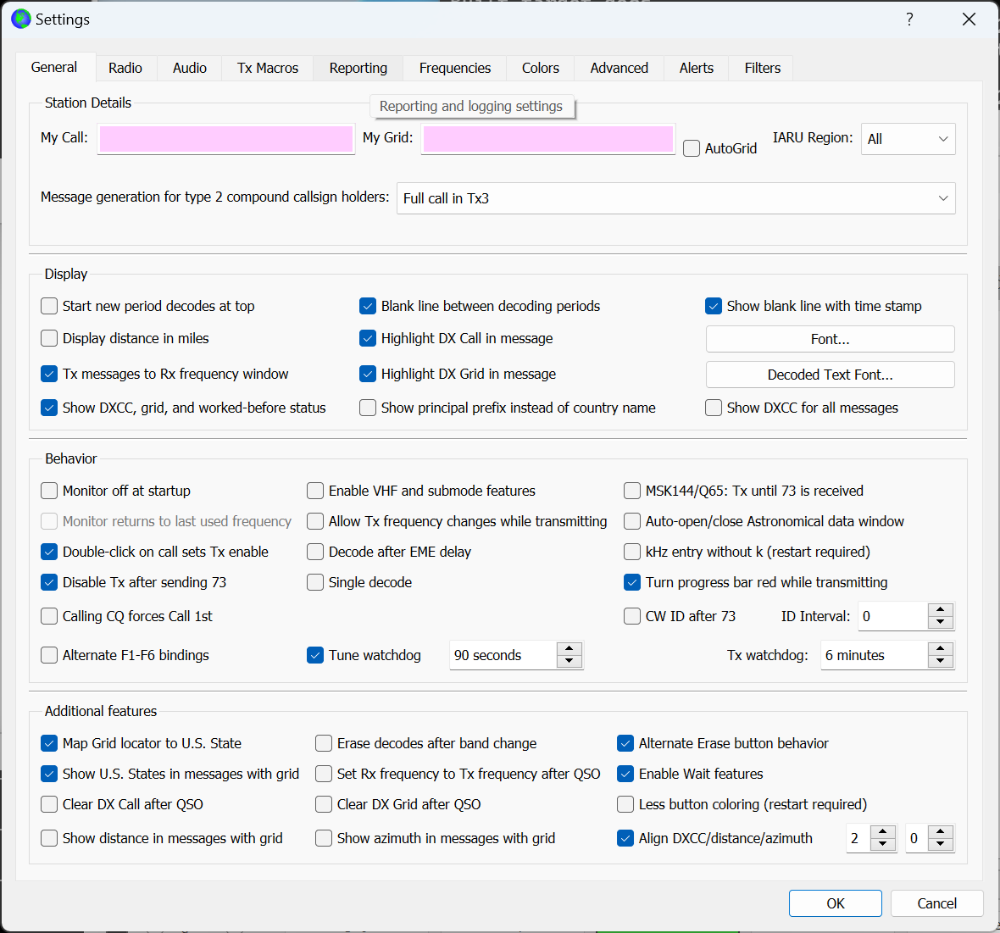
Meanings of remaining options on the General tab should be self-explanatory after you have made some QSOs using WSJT-X. You may return to set these options to your preferences later.
| If you are using a callsign with an add-on prefix or suffix, or wish to work a station using such a call, be sure to read the section Nonstandard Callsigns. |
| Checking Enable VHF/UHF/Microwave features necessarily disables the wideband multi-decode capability of JT65. In most circumstances you should turn this feature off when operating at HF. |
4.2. Radio
WSJT-X offers CAT (Computer Aided Transceiver) control of relevant features of most modern transceivers. To configure the program for your radio, select the Radio tab.
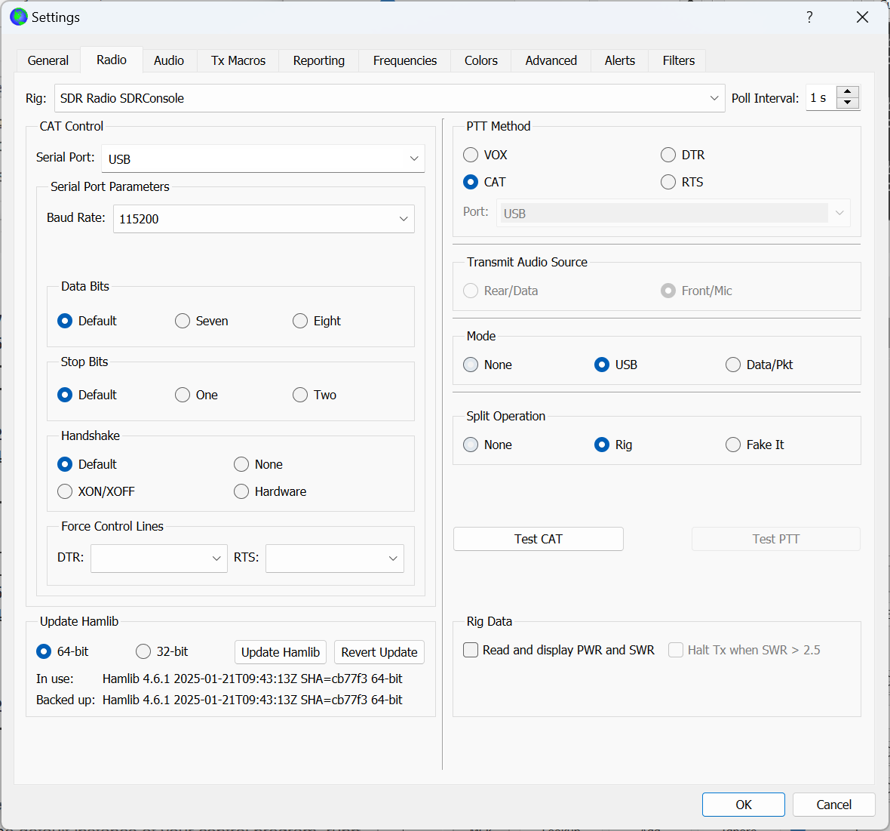
-
Select your radio type from the drop-down list labeled Rig, or None if you do not wish to use CAT control.
-
Alternatively, if you have configured your station for control by DX Lab Suite Commander, Flrig, Ham Radio Deluxe, Hamlib NET rigctl, or Omni-Rig, you may select one of those program names from the Rig list. In these cases the entry field immediately under CAT Control will be relabeled as Network Server. Leave this field blank to access the default instance of your control program, running on the same computer. If the control program runs on a different computer and/or port, specify it here. Hover the mouse pointer over the entry field to see the required formatting details.
-
Select Omni-Rig Rig 1 or Omni-Rig Rig 2 to connect to an Omni-Rig server installed on the same computer. Omni-Rig will be started automatically by WSJT-X.
-
-
Set Poll Interval to the desired interval for WSJT-X to query your radio. For most radios a small number (say, 1 – 3 s) is suitable.
-
CAT Control: To have WSJT-X control the radio directly rather than through another program, make the following settings:
-
Select the Serial Port or Network Server including the service port number used to communicate with your radio.
A special value of USB is available for custom USB devices like those used by some SDR kits. This is not the same as the virtual serial port provided by USB connected transceivers and CAT interfaces, for those use the COM or serial port name that refers to them. -
Serial Port Parameters: Set values for Baud Rate, Data Bits, Stop Bits, and Handshake method. Consult your radio’s user *guide for the proper parameter values.
CAT interfaces that require handshaking will be non-responsive until the correct Handshake setting is applied. -
Force Control Lines: A few station setups require the CAT serial port’s RTS and/or DTR control lines to be forced high or low. Check these boxes only if you are sure they are needed (for example, to power the radio serial interface).
-
-
PTT Method: select VOX, CAT, DTR, or RTS as the desired method for T/R switching. If your choice is DTR or RTS, select the desired serial port (which may be the same one as used for CAT control).
When using a proxy application for rig control, CAT is usually the correct option for PTT Method assuming the proxy application is capable of keying your transceiver independently. -
Transmit Audio Source: some radios permit you to choose the connector that will accept Tx audio. If this choice is enabled, select Rear/Data or Front/Mic.
-
Mode: WSJT-X uses upper sideband mode for both transmitting and receiving. Select USB, or choose Data/Pkt if your radio offers such an option and uses it to enable the rear-panel audio line input. Some radios also offer wider and/or flatter passbands when set to Data/Pkt mode. Select None if you do not want WSJT-X to change the radio’s Mode setting.
-
Split Operation: Significant advantages result from using Split mode (separate VFOs for Rx and Tx) if your radio supports it. If it does not, WSJT-X can emulate such behavior. Either method will result in a cleaner transmitted signal, by keeping the Tx audio always in the range 1500 to 2000 Hz so that audio harmonics cannot pass through the Tx sideband filter. Select Rig to use the radio’s Split mode, or Fake It to have WSJT-X adjust the VFO frequency as needed, when T/R switching occurs. Choose None if you do not wish to use split operation.
When all required settings have been made, click Test CAT to test communication between WSJT-X and your radio. The button should turn green to indicate that proper communication has been established. Failure of the CAT-control test turns the button red and displays an error message. After a successful CAT test, toggle the Test PTT button to confirm that your selected method of T/R control is working properly, the button turns red if the rig has been successfully keyed. (If you selected VOX for PTT Method, you can test T/R switching later by using the Tune button on the main window.)
4.3. Audio
Select the Audio tab to configure your sound system.
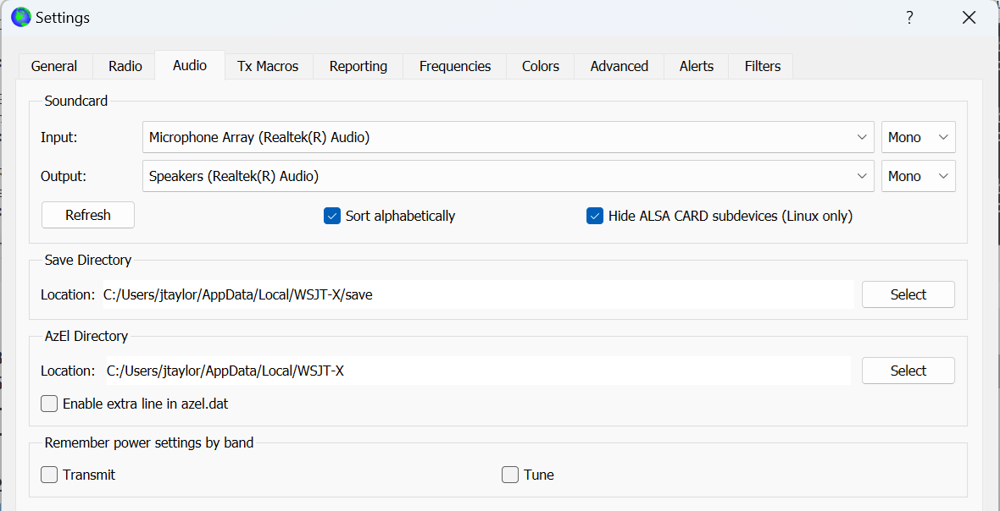
-
Soundcard: Select the audio devices to be used for Input and Output. Usually the Mono settings will suffice, but in special cases you can choose Left, Right, or Both stereo channels.
-
Be sure that your audio device is configured to sample at 48000 Hz, 16 bits.
If you select the audio output device that is also your computer’s default audio device, be sure to turn off all system sounds to prevent inadvertently transmitting them over the air. Windows 7 and later may configure audio devices using the Texas Instruments PCM2900 series CODEC for microphone input rather line input. (This chip is used in many radios with built-in USB CODECs, as well as various other audio interfaces.) If you are using such a device, be sure to set the mic level in the Recording Device Properties to 0 dB.
-
-
Save Directory: WSJT-X can save its received audio sequences as
.wavfiles. A default directory for these files is provided; you can select another location if desired. -
AzEl Directory: A file named
azel.datwill appear in the specified directory. The file contains information usable by another program for automatic tracking of the Sun or Moon, as well as calculated Doppler shift for the specified EME path. The file is updated once per second whenever the Astronomical Data window is displayed. -
Remember power settings by band: Checking either of these will cause WSJT-X to remember the Pwr slider setting for that operation on a band-by-band basis. For example, when Tune is checked here and you click the Tune button on the main window, the power slider will change to the most recent setting used for Tune on the band in use.
4.4. Tx Macros
Tx Macros are an aid for sending brief, frequently used free-text messages such as the examples shown below.
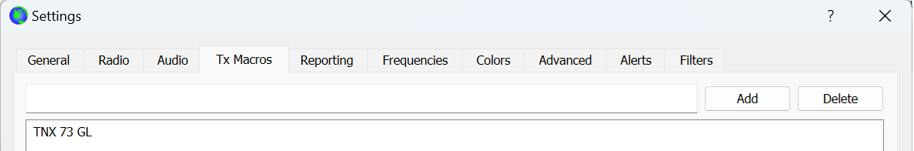
-
To add a new message to the list, enter the desired text in the entry field at top, then click Add.
-
Remember that a transmitted free-text message is limited to 13 characters, including blanks.
-
To remove an unwanted message, click on the message and then on Delete.
-
You can reorder your macro messages by using drag-and-drop. The new order will be preserved when WSJT-X is restarted.
-
Messages can also be added from the main window’s Tx5 field. Simply hit [Enter] after the message has been entered.
-
If the first word of a message is $DXCALL (or the shortened form $DX), that word will be replaced on transmission by the base callsign in the DxCall field.
4.5. Reporting
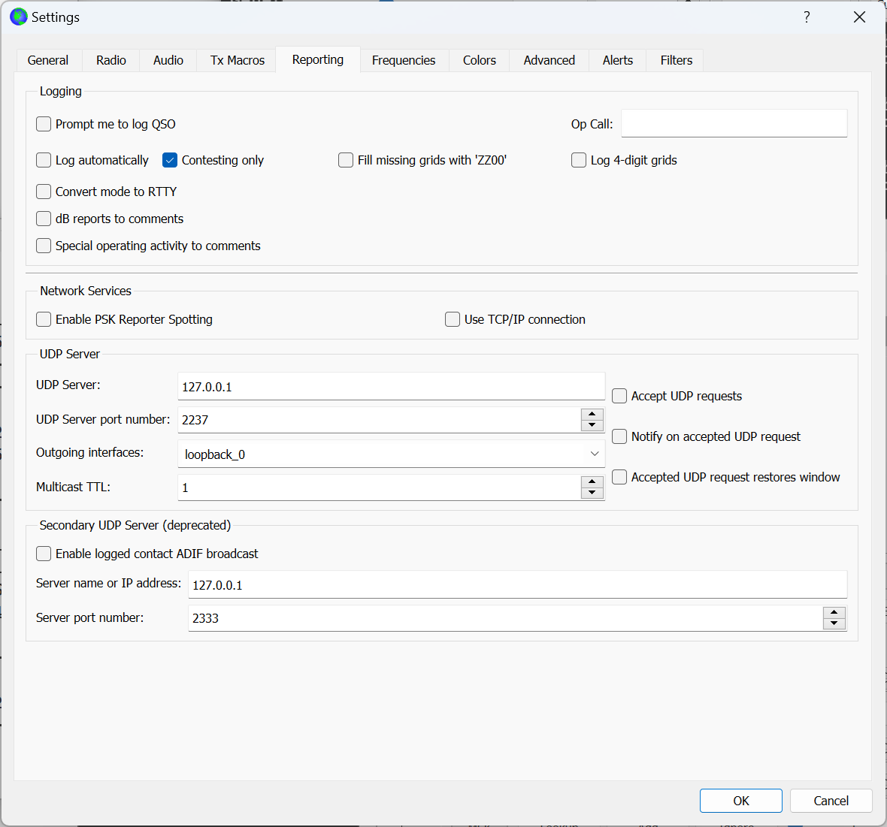
-
Logging: Choose any desired options from this group. Operators in a multi-operator station may wish to enter their home callsign as Op Call.
-
Network Services: Check Enable PSK Reporter Spotting to send reception reports to the PSK Reporter mapping facility.
-
UDP Server: This group of options controls the network name or address and port number used to exchange information with a third party application that interoperates with WSJT-X. Exchanged information includes decoded messages, general program status, QSOs logged, highlighting of callsigns in the WSJT-X band activity window, and limited facilities to initiate QSOs in response to CQ or QRZ messages. Full details of the protocol can be found in comments at the top of this file in our source code repository: https://sourceforge.net/p/wsjt/wsjtx/ci/master/tree/Network/NetworkMessage.hpp
| The Outgoing interfaces and Multicast TTL fields are only present when a multicast group IP address has been entered in the UDP Server field. |
Programs like JTAlert use the UDP Server feature to obtain information about running WSJT-X instances. If you are using JTAlert to control WSJT-X, be sure to check the Accept UDP requests box.
4.6. Frequencies
By default, the Working Frequencies table contains a list of frequencies conventionally used for modes FT8, JT4, JT9, JT65, MSK144, WSPR, and Echo. Conventions may change with time or by user preference; you can modify the frequency table as desired.
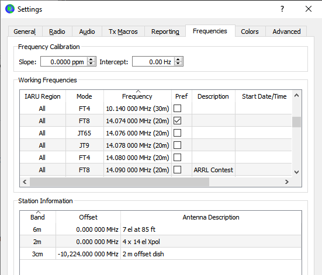
-
To change an existing entry, double-click to edit it, type a desired frequency in MHz or select from the drop-down list of options, then hit Enter on the keyboard. You can mark an entry as Preferred, provide a descriptive label, and indicate starting and ending dates and times for it to be displayed on the band-select control. The program will format your changed entries appropriately.
-
To add a new entry, right-click anywhere on the frequency table and select Insert. Enter your desired information and click OK. The table may include more than one frequency for a given mode and band.
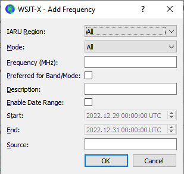
-
To delete an entry, right-click it and select Delete, multiple entries can be deleted in a single operation by selecting them before right-clicking.
-
Right-click anywhere within the table body and click Reset button to return the table to its default configuration.
Other more advanced maintenance operations are available on the right-click context popup menu that should be self-explanatory.
Frequency Calibration: If you have calibrated your radio using WWV or other reliable frequency references, or perhaps with the technique described in Accurate Frequency Measurements with your WSPR Setup, enter the measured values for Intercept A and Slope B in the equation
Dial error = A + B*f
where “Dial error” and A are in Hz, f is frequency in MHz, and B is in parts per million (ppm). Frequency values sent to the radio and received from it will then be adjusted so that frequencies displayed by WSJT-X are accurate.
Station Information: You can save Band, Offset and Antenna Description information for your station. The antenna information will be included in reception reports sent to PSK Reporter. By default the frequency offset for each band is zero. Nonzero offsets may be added if (for example) a transverter is in use.
-
To simplify things you might want to delete any unwanted bands — for example, bands where you have no equipment. Then click on a Frequency entry and type Ctrl+A to “select all,” and drag-and-drop the entries onto the Station Information table. You can then add any transverter offsets and antenna details.
-
To avoid typing the same information many times, you can drag-and-drop entries between the lines of the Station Information table.
-
When all settings have been configured to your liking, click OK to dismiss the Settings window.
4.7. Colors
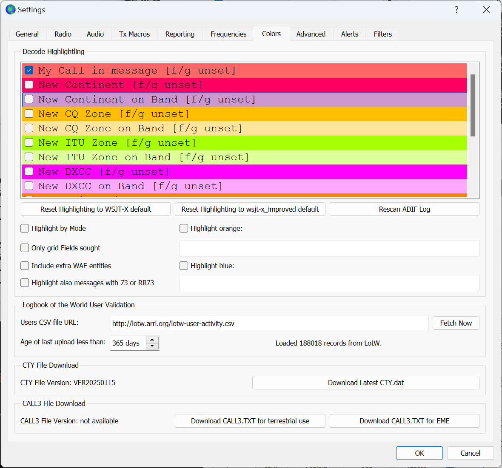
-
WSJT-X uses colors to highlight decoded CQ messages of particular interest. Check the box Show DXCC, grid, and worked-before status on the Settings | General tab, and any boxes of interest to you on the Colors tab. You can drag any line up or down to raise or lower its logical priority. Right-click any line to set a new foreground or background color. Foreground and background colors are applied separately, and careful choices of foreground, background, and priority can provide two indications of worked-before status.
-
Press the Reset Highlighting button to reset all of the color settings to default values.
-
Check Highlight by Mode if you wish worked before status to be per mode.
-
Check Only grid Fields sought if you are only interested in the leading two character grid locator Fields rather than teh four character grid locator Squares.
-
Check Include extra WAE entities if you are interested in the extra entities defined for DARC WAE and CQ Marathon awards.
-
Worked before status is calculated from your WSJT-X ADIF Logging file, you may replace ADIF log file with one exported from your station logging application, Rescan ADIF Log rebuilds the WSJT-X worked before indexes using the current ADIF log file.
The WSJT-X ADIF file records must contain the "CALL" field. The "BAND", and "MODE", and "GRIDSQUARE" fields are optional depending on your DXing objectives. DXCC entity, continent, CQ, and ITU Zone data for call prefixes and certain well known overrides are derived from the cty.dat database which is bundled with WSJT-X (See Logging for details).
Stations who are known to have uploaded their logs to the ARRL LoTW QSL matching service can be highlighted. The data used to determine this is available online.
-
Fetch Now will download a fresh dataset from the Users CSV file URL. The LoTW team normally update this data weekly.
-
Adjust Age of last upload less than to set the period within which a station must have uploaded their log to LoTW to trigger highlighting.
4.8. Advanced
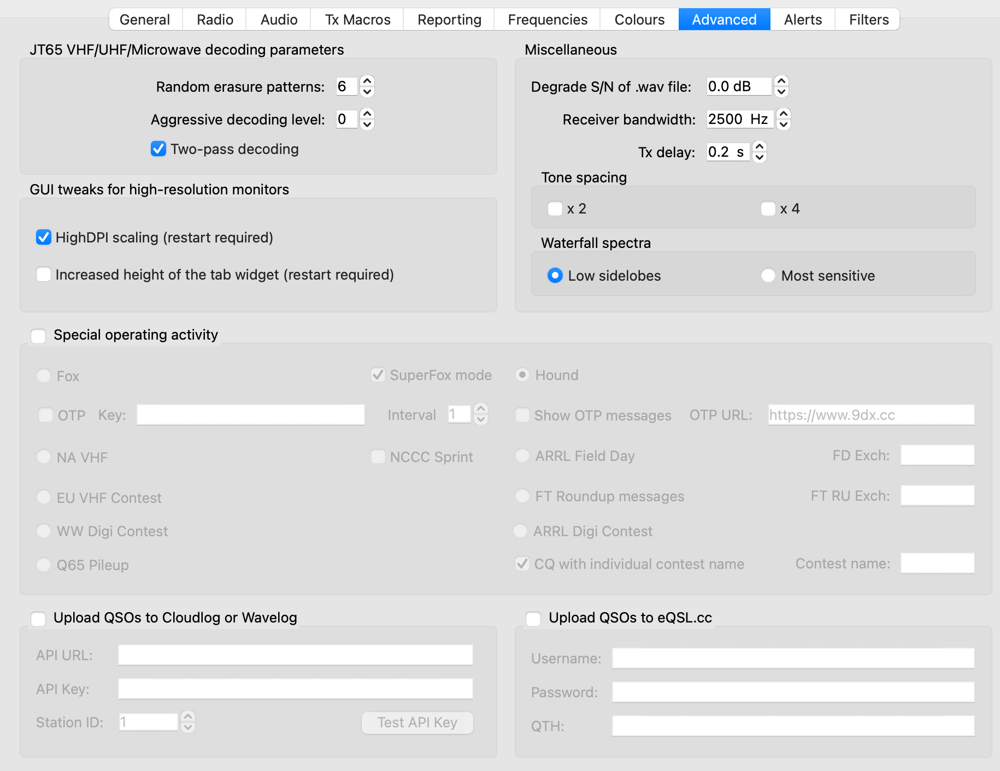
JT65 VHF/UHF/Microwave decoding parameters
-
Random erasure patterns logarithmically scales the number of pseudo-random trials used by the Franke-Taylor JT65 decoder. Larger numbers give slightly better sensitivity but take longer. For most purposes a good setting is 6 or 7.
-
Aggressive decoding level sets the threshold for acceptable decodes using Deep Search. Higher numbers will display results with lower confidence levels.
-
Check Two-pass decoding to enable a second decoding pass after signals producing first-pass decodes have been subtracted from the received data stream.
Miscellaneous
-
Set a positive number in Degrade S/N of .wav file to add known amounts of pseudo-random noise to data read from a .wav file. To ensure that the resulting S/N degradation is close to the requested number of dB, set Receiver bandwidth to your best estimate of the receiver’s effective noise bandwidth.
-
Set Tx delay to a number larger than the default 0.2 s to create a larger delay between execution of a command to enable PTT and onset of Tx audio.
For the health of your T/R relays and external preamplifier, we strongly recommend using a hardware sequencer and testing to make sure that sequencing is correct. -
Check x 2 Tone spacing or x 4 Tone spacing to generate Tx audio with twice or four times the normal tone spacing. This feature is intended for use with specialized LF/MF transmitters that divide generated frequencies by 2 or 4 as part of the transmission process.
Special Operating Activity
-
Check this box and select the type of activity to enable auto-generation of special message formats for contesting and DXpeditions. For ARRL Field Day, enter your operating Class and ARRL/RAC section; for FT Roundup, enter your state or province. Use “DX” for section or state if you are not in the US or Canada. In the FT Roundup, Stations in Alaska and Hawaii should enter “DX”.
-
Check Fox if you are a DXpedition station operating in FT8 DXpedition Mode. Check Hound if you wish to make QSOs with such a Fox. Be sure to read the operating instructions for FT8 DXpedition Mode.
4.9. Dark Style
An optional Dark style is available. To make it effective you will probably want to redefine your color settings. In Windows or Linux, start the program from a command-prompt window using the following command, or modify the WSJT-X desktop shortcut accordingly:
wsjtx --stylesheet :/qdarkstyle/style.qss
In macOS, enter the following command from a terminal:
open /Applications/wsjtx.app --args -stylesheet :/qdarkstyle/style.qss
In Linux using the Unity or GNOME GUI the following commands will update the WSJT-X start up:
sed '/Exec=wsjtx/ s/$/ -stylesheet :\/qdarkstyle\/style.qss/' \ /usr/share/applications/wsjtx.desktop >~/.local/share/applications/wsjtx.desktop update-desktop-database ~/.local/share/applications/
Depending on your operating system, the main WSJT-X window will look something like this:
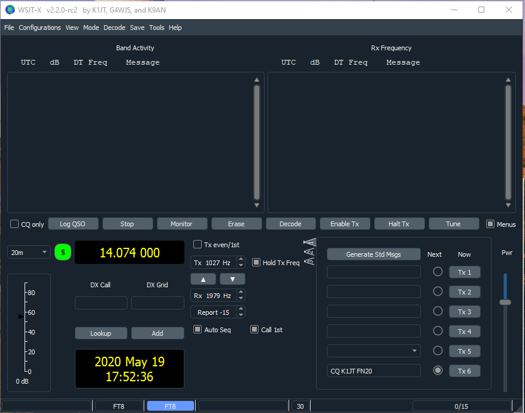
5. Transceiver Setup
-
If it is not already highlighted in green, click the Monitor button to start normal receive operation.
-
Be sure your transceiver is set to USB (or USB Data) mode.
-
Use the receiver gain controls and/or the computer’s audio mixer controls to set the background noise level (scale at lower left of main window) to around 30 dB when no signals are present. It is usually best to turn AGC off or reduce the RF gain control to minimize AGC action.
The PC audio mixer normally has two sliders, one for each application attached which should be set to maximum (0dB FS) as it cannot help with distortion from overly high or low input levels from your receiver and another Master level which is analogue attenuator on the sound card before the Analogue to Digital Converter (ADC). The Master level can be used to adjust the signal level received by WSJT-X.
-
If your transceiver offers more than one bandwidth setting in USB mode, it may be advantageous to choose the widest one possible, up to about 5 kHz.
-
If you have only a standard SSB filter you won’t be able to display more than about 2.7 kHz bandwidth. Depending on the exact dial frequency setting, on HF bands you can display the full sub-band generally used for one mode.
-
Click the Tune button on the main screen to switch the radio into transmit mode and generate a steady audio tone.
-
Listen to the generated audio tone using your radio’s Monitor facility. The transmitted tone should be perfectly smooth, with no clicks or glitches. Make sure that this is true even when you simultaneously use the computer to do other tasks such as email, web browsing, etc..
-
Adjust the Pwr slider (at right edge of main window) downward from its maximum until the RF output from your transmitter falls slightly. This is generally a good level for audio drive.
-
Toggle the Tune button once more or click Halt Tx to stop your test transmission.
6. Basic Operating Tutorial
This section introduces the basic user controls and program behavior of WSJT-X, with particular emphasis on the FT8 mode. We suggest that new users should go through the full HF-oriented tutorial, preferably while at your radio.
Subsequent sections cover additional details on Making QSOs, WSPR mode and VHF+ Features.
6.1. Download Samples
The following steps will download sample audio Wave files that were originally recorded by WSJT-X. These files can be read in and processed by WSJT-X to simulate realtime operation.
-
Select Download samples… from the Help menu.
-
Download some or all of the available sample files using checkboxes on the screen shown below. For this tutorial you will need at least the FT8 files.
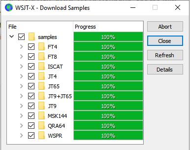
6.2. Wide Graph Settings
The WSJT-X Wide Graph window displays the frequency spectrum of the received audio. Usually, the upper portion of the window shows a waterfall plot of the frequency spectrum (a spectrogram) and a line plot of the current or average spectrum. Controls at the bottom of the window are used to set up the displayed audio frequency range, color palette, and scaling of the spectrum displays. A control on the bottom right of the Wide Graph (displayed as Spec nn%) lets you control the vertical fraction of the window occupied by the spectrum line plot. It is important to set appropriate lower and upper audio frequency limits for the Wide Graph because these limits define the FT8 decoder’s search window. For this tutorial, the limits will be set to cover 100-3300 Hz:
-
Set Start = 100 Hz.
-
Set Bins/Pixel = 5. Smaller/larger values make the Wide Graph cover a smaller/larger frequency range.
-
Use the mouse to grab the left or right edge of the Wide Graph, and adjust its width so that the upper frequency limit is about 3300 Hz.
The N Avg setting controls how many spectra are averaged to produce each line in the spectrogram. Smaller values make the spectrogram update more frequently, resulting in signals being more spread out in the vertical (time) direction. On the other hand, larger values make it easier to detect very weak signals:
-
Set N Avg = 2.
The Palette setting controls the color scheme used for the spectrogram:
-
Set Palette = Fldigi
When Flatten is checked, WSJT-X attempts to correct for slope or curvature in the receiver’s passband shape.
-
Flatten = checked
The line plot can be set to display the current (un-averaged) spectrum or the cumulative (averaged) spectrum:
-
Select Cumulative for data display
-
Set the Gain and Zero sliders for the waterfall and spectrum to near midscale
The Spec nn% setting determines what fraction of the vertical extent of the Wide Graph will be used for the line plot of the spectrum. Setting Spec to 0 will eliminate the line plot and a setting of 100 will eliminate the spectrogram and show only the line plot:
-
Set Spec = 50%
6.3. FT8
-
Click the Stop button on the main window to halt any data acquisition.
-
Select FT8 from the Mode menu and Deep from the Decode menu.
-
Double-click on Erase to clear both text windows.
-
Select File | Open log directory and navigate to ...\save\samples\FT8\210703_133430.wav. The waterfall and Band Activity/Rx Frequency windows should look something like the following screen shots:
-
You may want to pretend you are K1JT by entering that callsign temporarily as My Call on the Settings | General tab. Your results should then be identical to those shown in the screen shot below. Don’t forget to change My Call back to your own call when you are done!
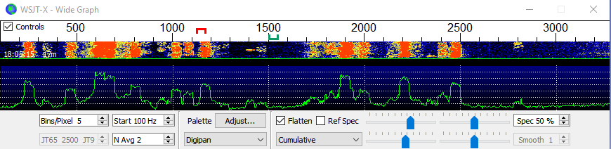
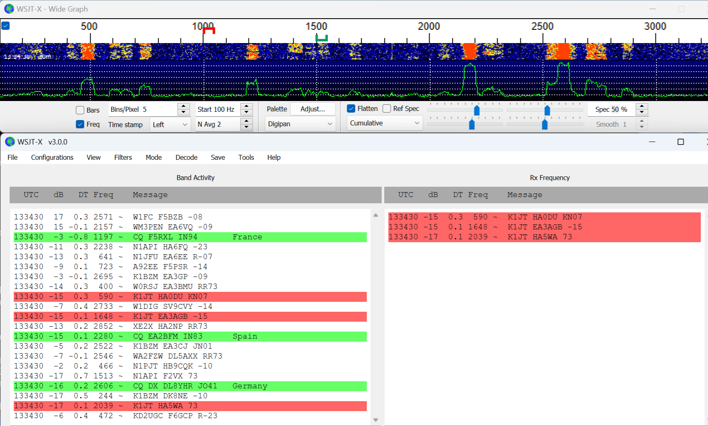
Decoding takes place at the end of a receive sequence. With Decode set to Deep, three decoding passes will be done and the Decode button on the mainwindow will illuminate three times, once for each pass. The first decoding attempt in each decoding pass is done at the selected Rx frequency, indicated by the U-shaped green marker on the waterfall frequency scale. All decodes appear in the left (Band Activity) window. The right (Rx Frequency) text window displays any decodes obtained at the current Rx frequency along with any decodes addressed to My Call (K1JT in this case). The red marker on the waterfall scale indicates your Tx frequency.
Twenty-one FT8 signals are decoded from the example file. The number
of decodes is shown in a box at the bottom of the main window.
When this file was recorded HA5WA was finishing a QSO with K1JT, and
his 73 message is shown in red because it is addressed to My Call (in this case K1JT).
By default, lines containing CQ
are highlighted in green, and lines with My Call (K1JT)
in red. Notice that K1JT has two callers; HA0DU and EA3AGB.
To gain some feeling for controls frequently used when making QSOs, try double-clicking with the mouse on the decoded text lines and on the waterfall spectral display. You should be able to confirm the following behavior:
-
Double-click on one of the decoded CQ messages highlighted in green. These actions produce the following results:
-
Callsign and locator of the station calling CQ are copied to the DX Call and DX Grid entry fields.
-
Messages are generated for a standard minimal QSO.
-
The Tx even box is checked or cleared appropriately, so that you will transmit in the proper (odd or even) minutes.
-
The Rx frequency marker is moved to the frequency of the CQing station.
-
You can modify the double-click behavior by holding down the Shift key to move only the Tx frequency or the Ctrl key to move both Rx and Tx frequencies. (On a Mac computer, use the command key instead of Ctrl).
-
In addition, if Double-click on call sets Tx enable is checked on the Settings | General tab then Enable Tx will be activated so that a transmission will start automatically at the proper time.
You can prevent your Tx frequency from being changed by checking the box Hold Tx Freq. -
-
Double-click on the decoded message
K1JT HA0DU KN07, highlighted in red. Results will be similar to those in the previous step. The Tx frequency (red marker) is not moved unless Shift or Ctrl is held down. Messages highlighted in red are usually in response to your own CQ or from a tail-ender, and you probably want your Tx frequency to stay where it was. -
Click with the mouse anywhere on the waterfall display. The green Rx frequency marker will jump to your selected frequency, and the Rx frequency control on the main window will be updated accordingly.
-
Do the same thing with the Shift key held down. Now the red Tx frequency marker and its associated control on the main window will follow your frequency selections.
-
Do the same thing with the Ctrl key held down. Now both colored markers and both spinner controls will follow your selections.
-
Double-clicking at any frequency on the waterfall does all the things just described and also invokes the decoder in a small range around the Rx frequency. To decode a particular signal, double-click near the left edge of its waterfall trace.
-
Ctrl-double-click on a signal to set both Rx and Tx frequencies and decode at the new frequency.
-
Click Erase to clear the right window.
-
Double-click Erase to clear both text windows.
| To avoid QRM from competing callers, it is usually best to answer a CQ on a different frequency from that of the CQing station. The same is true when you tail-end another QSO. Choose a Tx frequency that appears to be not in use. You might want to check the box Hold Tx Freq. |
| Keyboard shortcuts Shift+F11 and Shift+F12 provide an easy way to move your Tx frequency down or up in 60 Hz steps. |
| Sliders and spinner controls respond to Arrow key presses and Page Up/Down key presses, with the Page keys moving the controls in larger steps. You can also type numbers directly into the spinner controls or use the mouse wheel. |
| An online FT8 Operating Guide by ZL2IFB offers many additional tips on operating procedures. |
This special operating mode enables DXpeditions to make FT8 QSOs at very high rates. Both stations must use WSJT-X Version 1.9 or later. Detailed operating instructions for FT8 DXpedition Mode are available online. Do not try to use DXpedition mode without reading these instructions carefully!
| FT8 DXpedition mode is intended for use by rare-entity DXpeditions and other unusual circumstances in which sustained QSO rates well above 100/hour are expected. Do not use the multi-signal capability unless you satisfy this requirement, and do not use DXpedition Mode in the conventional FT8 sub-bands. If you are contemplating operation as Fox using DXpedition Mode, find a suitable dial frequency consistent with regional band plans and publicize it for the operators you hope to work. Remember that on-the-air signal frequencies will be higher than the dial frequency by up to 4 kHz. |
| When finished with this Tutorial, don’t forget to re-enter your own callsign as My Call on the Settings | General tab. |
6.4. FT4
FT4 is designed for contesting, particularly on the HF bands and 6 meters. Compared with FT8 it is 3.5 dB less sensitive and requires 1.6 times the bandwidth, but it offers the potential for twice the QSO rate.
-
Select FT4 on the Mode menu.
-
Double-click on Erase to clear both text windows.
-
Bins/Pixel = 5, Start = 100 Hz, N Avg = 1
-
Adjust the width of the Wide Graph window so that the upper frequency limit is approximately 3300 Hz.
-
Select File | Open and navigate to ...\save\samples\FT4\200514_182053.wav. The waterfall and Band Activity window should look something like the following screen shots. This sample file was recorded during a practice contest test session, so most of the decoded messages use the FT Roundup message formats.
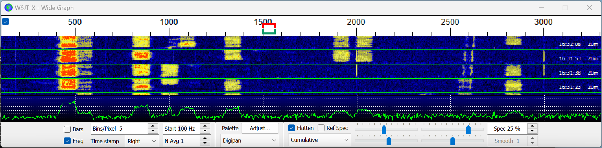
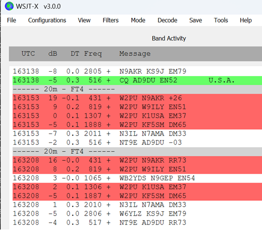
-
Click with the mouse anywhere on the waterfall display. The green Rx frequency marker will jump to your selected frequency, and the Rx frequency control on the main window will be updated accordingly.
-
Do the same thing with the Shift key held down. Now the red Tx frequency marker and its associated control on the main window will follow your frequency selections.
-
Do the same thing with the Ctrl key held down. Now both colored markers and both spinner controls will follow your selections.
-
Now double-click on any of the lines of decoded text in the Band Activity window. Any line will show similar behavior, setting Rx frequency to that of the selected message and leaving Tx frequency unchanged. To change both Rx and Tx frequencies, hold Ctrl down when double-clicking.
The FT4 user interface includes a button labeled Best S+P.
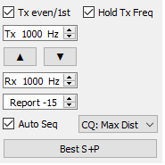
Clicking Best S+P during an Rx cycle arms the program to examine all CQ messages decoded at the end of the Rx sequence. The program will select the best potential QSO partner (from a contesting perspective), and treat it as if you had double-clicked on that line of decoded text. Here "best potential QSO partner" means "New Multiplier" (1st priority) or "New Call on Band" (2nd priority). "New Multiplier" is currently interpreted to mean "New DXCC"; a more broadly defined multiplier category (for the FT Roundup rules) will be implemented in due course. We may provide additional priority rankings, for example “New Grid on Band” (useful for North American VHF contests), sorting by signal strength, etc.
Best S+P is a useful feature only if you have defined what "best" is supposed to mean. This is done by configuring suitable options on the Settings | Colors tab. Selection and ordering of color-highlighting options determines what potential QSO partners will be chosen by the "Best S+P" feature. Optimum choices will be different for different contests. In a contest using FT Roundup rules we recommend activating My Call in message, New DXCC, New Call on Band, CQ in message and Transmitted message, reading from top to bottom.
| Keyboard shortcuts Shift+F11 and Shift+F12 provide an easy way to move your FT4 Tx frequency down or up in 90 Hz steps. |
| For easy keyboard control of transmitted messages, check Alternate F1–F6 bindings on the Settings | General tab. In contest-style operation you can then hit F1 to solicit a QSO by sending CQ. Similarly, keys F2 to F5 will send the messages in entry fields Tx2 to Tx5. More details on contest-style operation can be found in The FT4 Protocol for Digital Contesting. |
| When finished with this Tutorial, don’t forget to re-enter your own callsign as My Call on the Settings | General tab. |
6.5. FST4
Do not confuse FST4 with FT4, which has a very different purpose! FST4 is designed primarily for making weak-signal 2-way QSOs on the LF and MF bands. T/R periods from 15 s up to 1800 s are available. Longer T/R periods provide better sensitivity only if Tx and Rx frequency instability and channel Doppler spread are small enough so that received signals remain phase coherent over periods spanning several transmitted symbols. Generally speaking, Rx and Tx frequency changes during the transmission and channel Doppler spread should each be small compared to the symbol keying rate shown for each T/R duration in Table 7 within section Protocol Specifications. For example, the keying rate for the 1800 s T/R period is 0.089 Baud, so successful operation using this T/R length requires Tx and Rx frequency stability better than 0.089 Hz over the duration of the 1800 s transmission in addition to channel Doppler spread smaller than 0.089 Hz.
Operation with FST4 is similar to that with other WSJT-X modes: most on-screen controls, auto-sequencing, and other features behave in familiar ways. However, operating conventions on the 2200 and 630 m bands have made some additional user controls desirable. Spin boxes labeled F Low and F High set lower and upper frequency limits used by the FST4 decoder, and these limits are marked by dark green angle-bracket symbols < > on the Wide Graph frequency scale:
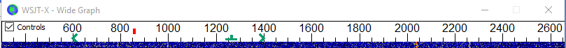
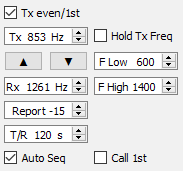
It’s best to keep the decoding range fairly small, since QRM and transmissions in other modes or sequence lengths will slow down the decoding process (and of course will be undecodable). By checking Single decode on the File | Settings | General tab, you can further limit the decoding range to the setting of F Tol on either side of Rx Freq.
A noise blanker can be enabled by setting the NB percentage to a non-zero value. This setting determines how many of the largest-amplitude samples will be blanked (zeroed) before the data is submitted to the decoder. Most users find that settings between 0% (no blanking) and 10% work best. If the noise blanker percentage is set to -1%, then the decoder will try 0, 5, 10, 15, and 20 % in succession. Similarly, a setting of -2% causes the decoder to loop over blanking percentages 0, 2, 4, … 20 %. To save time, the multiple blanking percentages triggered by negative NB settings are tried only for signal candidates located near (within +/- 20 Hz) of the Rx frequency setting.
-
Select FST4 on the Mode menu. Set T/R to 60 s and Decode | Deep.
-
Set NB (noise blanker) to 0%.
-
Set up the Wide Graph display with settings appropriate for the FST4-60 mode. For example, try Bins/Pixel 2 and N Avg 4. Set the Start frequency and the width of the Wide Graph to include the frequency range that you want to decode. For this example, make sure that Start is less than 1000 Hz and that the Wide Graph extends to above 1400 Hz.
-
Set F Low 1000, F High 1400. These settings define the decoder’s frequency search range.
-
Open a sample Wave file using File | Open and select the file …\save\samples\FST4+FST4W\210115_0058.wav. After WSJT-X has processed the file you should see something similar to the following screen shot:
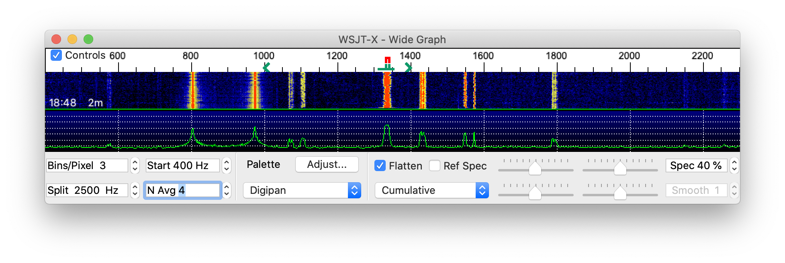
6.6. FST4W
FST4W is used in the same way as WSPR, but FST4W has significant advantages for use on the 2200 m and 630 m bands. By default the central Rx Freq is 1500 Hz and F Tol is 100 Hz, so the active decoding range is 1400 to 1600 Hz. However, for added flexibility you can select different center frequencies and F Tol values. We expect that usage conventions will soon be established for FST4W activity on 2200 and 630 m.
A new drop-down control below F Tol offers a round-robin mode for scheduling FST4W transmissions:
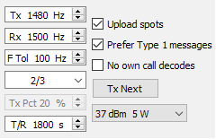
If three operators agree in advance to select the options 1/3, 2/3, and 3/3, for example, their FST4W transmissions will occur in a fixed sequence with no two stations transmitting simultaneously. Sequence 1 is the first sequence after 00:00 UTC. For WSPR-like scheduling behavior, you should select Random with this control.
-
Select FST4W on the Mode menu. Set T/R to 1800 s and Decode | Deep.
-
Set NB to 0%.
-
Select appropriate wide graph settings. For example, try Bins/Pixel 1, Start 1200 Hz and N Avg 150.
-
Open a sample Wave file using File | Open and select the file …\save\samples\FST4+FST4W\201230_0300.wav. When it is finished you should see a single decode as shown in the screenshot:
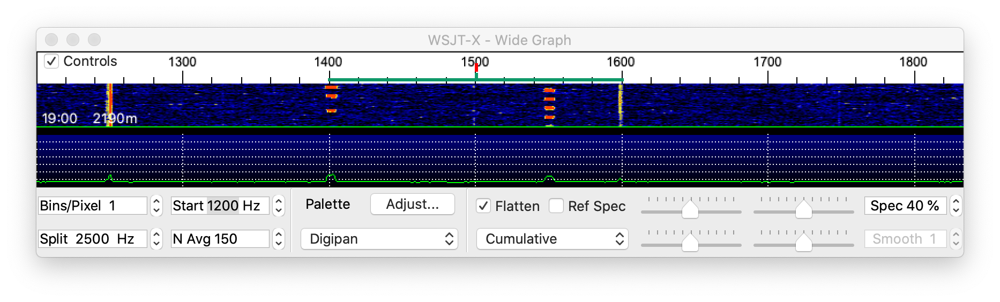
Note that the weak signal associated with the single decode is all but invisible on the widegraph spectrogram.
7. Making QSOs
7.1. Standard Exchange
By longstanding tradition, a minimally valid QSO requires the exchange of callsigns, a signal report or some other information, and acknowledgments. WSJT-X is designed to facilitate making such minimal QSOs using short, structured messages. The process works best if you use these formats and follow standard operating practices. The recommended basic QSO goes something like this:
CQ K1ABC FN42 #K1ABC calls CQ
K1ABC G0XYZ IO91 #G0XYZ answers
G0XYZ K1ABC –19 #K1ABC sends report
K1ABC G0XYZ R-22 #G0XYZ sends R+report
G0XYZ K1ABC RRR #K1ABC sends RRR
K1ABC G0XYZ 73 #G0XYZ sends 73
Standard messages consist of two callsigns (or CQ, QRZ, or DE and one callsign) followed by the transmitting station’s grid locator, a signal report, R plus a signal report, or the final acknowledgements RRR or 73. These messages are compressed and encoded in a highly efficient and reliable way. In uncompressed form (as displayed on-screen) they may contain as many as 22 characters. Some operators prefer to send RR73 rather than RRR. This is workable because RR73 is encoded as a valid grid locator, one unlikely ever to be occupied by an amateur station.
Signal reports are specified as signal-to-noise ratio (S/N) in dB, using a standard reference noise bandwidth of 2500 Hz. Thus, in the example message above, K1ABC is telling G0XYZ that his signal is 19 dB below the noise power in bandwidth 2500 Hz. In the message at 0004, G0XYZ acknowledges receipt of that report and responds with a –22 dB signal report. JT65 reports are constrained to lie in the range –30 to –1 dB, and values are significantly compressed above about -10 dB. JT9 supports the extended range –50 to +49 dB and assigns more reliable numbers to relatively strong signals.
| Signals become visible on the waterfall around S/N = –26 dB and audible (to someone with very good hearing) around –15 dB. Thresholds for decodability are around -20 dB for FT8, -23 dB for JT4, –25 dB for JT65, and –27 dB for JT9. |
Several options are available for circumstances where fast QSOs
are desirable. Double-click the Tx1 control under Now or Next
to toggle use of the Tx2 message rather than Tx1 to start a QSO.
Similarly, double-click the Tx4 control to toggle between sending
RRR and RR73 in that message. The RR73 message should be used
only if you are reasonably confident that no repetitions will be
required.
|
7.2. Free-Text Messages
Users often add some friendly chit-chat at the end of a QSO. Free-format messages such as “TNX ROBERT 73” or “5W VERT 73 GL” are supported, up to a maximum of 13 characters, including spaces. In general you should avoid the character / in free-text messages, as the program may then try to interpret your construction as part of a compound callsign. It should be obvious that the JT4, JT9, and JT65 protocols are not designed or well suited for extensive conversations or rag-chewing.
7.3. Auto-Sequencing
The T/R cycles of many WSJT-X modes allow only a few seconds to inspect decoded messages and decide how to reply. Often this is not enough time, so for FST4, FT4, FT8, MSK144, and Q65 the program offers a basic auto-sequencing feature.
Check Auto Seq on the main window to enable this feature:
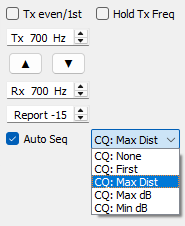
When calling CQ you may choose to select CQ: First to reply automatically to the first decoded responder, or CQ: Max Dist to reply to the most distant responder.
| When Auto-Seq is enabled, the program de-activates Enable Tx at the end of each QSO. It is not intended that WSJT-X should make fully automated QSOs. Auto-sequencing is an operator aid, not an operator replacement. |
7.4. Contest Messages
The FT4, FT8, and MSK144 protocols support special messages optimized for NA VHF and EU VHF contests. FT4 and FT8 also support messages for ARRL Field Day, FT Roundup, and the WW Digi contest. The decoders recognize and decode these messages at any time. Configure the program to automatically generate the required message types for contest exchanges and carry out suitable auto-sequencing by selecting a supported operating activity on the Settings | Advanced tab. Model QSOs then proceed as follows, for each event type:
NA VHF Contest and ARRL International Digital Contest
CQ TEST K1ABC FN42
K1ABC W9XYZ EN37
W9XYZ K1ABC R FN42
K1ABC W9XYZ RRR
W9XYZ K1ABC 73
Either callsign (or both) may have /R appended to signify a Rover in a VHF contest. You can use RR73 in place of RRR, and the final 73 is optional.
EU VHF Contest
CQ TEST G4ABC IO91
G4ABC PA9XYZ JO22
<PA9XYZ> <G4ABC> 570123 IO91NP
<G4ABC> <PA9XYZ> R 580071 JO22DB
PA9XYZ G4ABC RR73
Either callsign (or both) may have /P appended.
| Messages conveying signal reports, QSO serial numbers, and 6-character locators have been changed in WSJT-X v2.2 and are not compatible with the formats used in earlier program versions. Be sure to upgrade WSJT-X if you will use EU VHF Contest messages. |
ARRL Field Day
CQ FD K1ABC FN42
K1ABC W9XYZ 6A WI
W9XYZ K1ABC R 2B EMA
K1ABC W9XYZ RR73
FT Roundup
CQ RU K1ABC FN42
K1ABC W9XYZ 579 WI
W9XYZ K1ABC R 589 MA
K1ABC W9XYZ RR73
WW Digi Contest
CQ WW K1ABC FN42
K1ABC S52XYZ JN76
S52XYZ K1ABC R FN42
K1ABC S52XYZ RR73
Contest QSOs are generally treated as invalid when they appear in one station’s log and not the supposed QSO partner’s. To avoid Not-in-Log (NIL) penalties for yourself and others, we recommend the following guidelines for contest logging with FT4, FT8, and MSK144:
-
Activate and learn to use the Alternate F1-F6 bindings selectable on the Settings | General tab.
-
Always log a QSO when you have received RRR, RR73, or 73 from a station you are working.
-
Log a QSO when you send RR73 or 73 if you are reasonably confident it will be copied. But be sure to watch for any indication that it was not copied, and then take appropriate action. For example, if you receive the Tx3 message (R plus contest exchange) again, and if you have activated the Alternate F1-F6 bindings, hit F4 to re-send your RR73.
7.5. Nonstandard Callsigns
Modes with 77-bit message payloads: FST4, FT4, FT8, MSK144, and Q65
Compound callsigns like PJ4/K1ABC or K1ABC/3 and special event callsigns like YW18FIFA are supported for normal QSOs but not for contest-style messages. Model QSOs look something like this:
CQ PJ4/K1ABC
<PJ4/K1ABC> W9XYZ
W9XYZ <PJ4/K1ABC> +03
<PJ4/K1ABC> W9XYZ R-08
<W9XYZ> PJ4/K1ABC RRR
PJ4/K1ABC <W9XYZ> 73
The compound or nonstandard callsigns are automatically recognized and handled using special message formats. One such callsign and one standard callsign may appear in most messages, provided that one of them is enclosed in < > angle brackets. If the message includes a grid locator or numerical signal report, the brackets must enclose the compound or nonstandard callsign; otherwise the brackets may be around either call.
Angle brackets imply that the enclosed callsign is not transmitted in full, but rather as a hash code using a smaller number of bits. Receiving stations will display the full nonstandard callsign if it has been received in full in the recent past. Otherwise it will be displayed as < . . . >. These restrictions are honored automatically by the algorithm that generates default messages for minimal QSOs. Except for the special cases involving /P or /R used in VHF contesting, WSJT-X {VERSION_MAJOR}.{VERSION_MINOR} offers no support for two nonstandard callsigns to work each other.
| Using a nonstandard callsign has definite costs. It restricts the types of information that can be included in a message. It prevents including your locator in standard messages, which necessarily impairs the usefulness of tools like PSK Reporter. |
Modes with 72-bit message payloads: JT4, JT9, and JT65
In the 72-bit modes, compound callsigns are handled in one of two possible ways:
A list of about 350 of the most common prefixes and suffixes can be displayed from the Help menu. A single compound callsign involving one item from this list can be used in place of the standard third word of a message (normally a locator, signal report, RRR, or 73). The following examples are all acceptable messages containing Type 1 compound callsigns:
CQ ZA/K1ABC CQ K1ABC/4 ZA/K1ABC G0XYZ G0XYZ K1ABC/4
The following messages are not valid, because a third word is not permitted in any message containing a Type 1 compound callsign:
ZA/K1ABC G0XYZ -22 #These messages are invalid; each would G0XYZ K1ABC/4 73 # be sent without its third "word"
A QSO between two stations using Type 1 compound-callsign messages might look like this:
CQ ZA/K1ABC
ZA/K1ABC G0XYZ
G0XYZ K1ABC –19
K1ABC G0XYZ R–22
G0XYZ K1ABC RRR
K1ABC G0XYZ 73
Notice that the full compound callsign is sent and received in the first two transmissions. After that, the operators omit the add-on prefix or suffix and use the standard structured messages.
Prefixes and suffixes not found in the displayable short list are handled by using Type 2 compound callsigns. In this case the compound callsign must be the second word in a two- or three-word message, and the first word must be CQ, DE, or QRZ. Prefixes can be 1 to 4 characters, suffixes 1 to 3 characters. A third word conveying a locator, report, RRR, or 73 is permitted. The following are valid messages containing Type 2 compound callsigns:
CQ W4/G0XYZ FM07 QRZ K1ABC/VE6 DO33 DE W4/G0XYZ FM18 DE W4/G0XYZ -22 DE W4/G0XYZ R-22 DE W4/G0XYZ RRR DE W4/G0XYZ 73
In each case, the compound callsign is treated as Type 2 because the add-on prefix or suffix is not one of those in the fixed list. Note that a second callsign is never permissible in these messages.
| During a transmission your outgoing message is displayed in the first label on the Status Bar and shown exactly as another station receives it. You can check to see that you are actually transmitting the message you wish to send. |
QSOs involving Type 2 compound callsigns might look like either of the following sequences:
CQ K1ABC/VE1 FN75
K1ABC G0XYZ IO91
G0XYZ K1ABC –19
K1ABC G0XYZ R–22
G0XYZ K1ABC RRR
K1ABC/VE1 73
CQ K1ABC FN42
DE G0XYZ/W4 FM18
G0XYZ K1ABC –19
K1ABC G0XYZ R–22
G0XYZ K1ABC RRR
DE G0XYZ/W4 73
Operators with a compound callsign use its full form when calling CQ and possibly also in a 73 transmission, as may be required by licensing authorities. Other transmissions during a QSO may use the standard structured messages without callsign prefix or suffix.
| If you are using a compound callsign, you may want to experiment with the option Message generation for type 2 compound callsign holders on the File | Settings | General tab, so that messages will be generated that best suit your needs. |
7.6. Pre-QSO Checklist
Before attempting your first QSO with one of the WSJT modes, be sure to go through the Basic Operating Tutorial above as well as the following checklist:
-
Your callsign and grid locator set to correct values
-
PTT and CAT control (if used) properly configured and tested
-
Computer clock properly synchronized to UTC within ±1 s
-
Audio input and output devices configured for sample rate 48000 Hz, 16 bits
-
Radio set to USB (upper sideband) mode
-
Radio filters centered and set to widest available passband (up to 5 kHz).
| Remember that in many circumstances FT4, FT8, JT4, JT9, JT65, and WSPR do not require high power. Under most HF propagation conditions, QRP is the norm. |
8. Message System
The WSJT-X Message System can be used to invite your QSO partner to move to another band or mode (for example, during a contest), or to convey some short canned messages. There are two main parts, the Message Creator and the QSY Monitor. Received messages are displayed in popup windows.
8.1. Message Creator
Use the Message Creator to create and send these special messages with just a few clicks. When using this feature for the first time, make sure that your IARU Region has been set on the File | Settings | General tab:
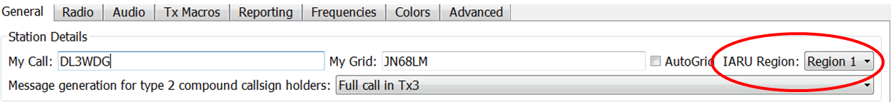
The Message Creator window is activated from the View menu:
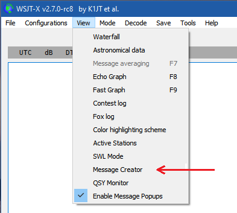
Four tabs are available: HF, VHF, EME and General.
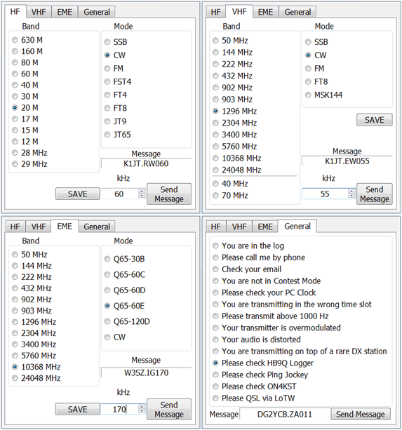
To send a message, select the appropriate tab and then the band, mode, and kHz part of frequency for a QSY request, or a canned message from the General tab. The actual message to be sent will be shown in the field indicated by the red arrow. Click Send Message to have this message conveyed in your next transmission. Enable Tx will be activated automatically, and your message will be sent to the callsign in the DX Call field of the main window. The example below shows the creation of a messsage to W3SZ asking him to QSY to 145.550 using FM.
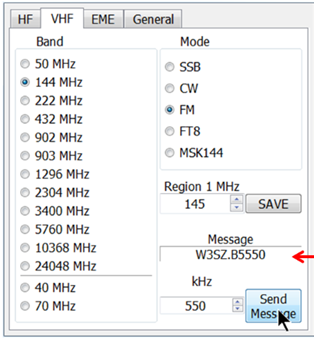
8.2. Receiving Message System transmissions
To receive these special messages, select Enable Message Popups on the View menu:
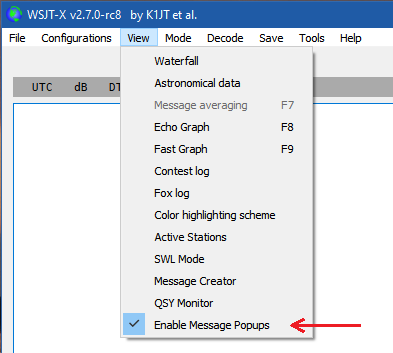
A screenshot showing the example message sent to W3SZ is shown below. As recipient, W3SZ can click Reply Yes or Reply No, and his reply message will be sent in the next Tx interval to the callsign present in the recipient’s DX callsign box.
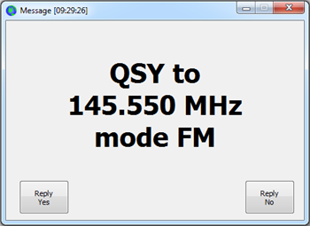
| After use, the Message System text remains in the Tx 6 field. Tx 6 can be reset to the standard CQ message by clicking the Generate Std Msgs button. |
9. VHF+ Features
WSJT-X supports a number of features designed for use on the VHF and higher bands. These features include:
-
FT4, for contesting
-
FT8, for fast QSOs with weak, fading signals
-
JT4, for EME on the microwave bands
-
JT9 fast modes, for scatter propagation on VHF bands
-
JT65, for EME on VHF and higher bands
-
Q65, for ionospheric scatter, tropospheric scatter, rain scatter, TEP, and EME
-
MSK144, for meteor scatter
-
Echo mode, for detecting and measuring your own lunar echoes
-
Doppler tracking, which becomes increasingly important for EME on bands above 1.2 GHz.
9.1. VHF Setup
To activate the VHF-and-up features:
-
On the Settings | General tab check Enable VHF and submode features and Single decode.
-
For EME, check Decode after EME delay to allow for extra path delay on received signals.
-
If you will use automatic Doppler tracking and your radio accepts frequency-setting commands while transmitting, check Allow Tx frequency changes while transmitting. Transceivers known to permit such changes include the IC-735, IC-756 Pro II, IC-910-H, FT-847, TS-590S, TS-590SG, TS-2000 (with Rev 9 or later firmware upgrade), Flex 1500 and 5000, HPSDR, Anan-10, Anan-100, and KX3. To gain full benefit of Doppler tracking your radio should allow frequency changes under CAT control in 1 Hz steps.
| If your radio does not accept commands to change frequency while transmitting, Doppler tracking will be approximated with a single Tx frequency adjustment before a transmission starts, using a value computed for the middle of the Tx period. |
-
On the Radio tab select Split Operation (use either Rig or Fake It; you may need to experiment with both options to find one that works best with your radio). Fake it is provided to allow the necessary changes in receive and transmit frequencies for rigs that have only one VFO accessible via CAT. It accomplishes this by sending the required tranmsit frequency shortly before the start of the transmit period. Functionally there is no difference in operation of Rig or Fake it. If in any doubt Fake it is the safest option.
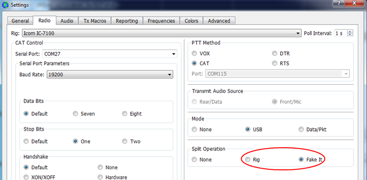
Successful setting of split operation can be verified by checking that S is embedded in the indicator between the band combo box and the dial frequency indicator. In some circumstances the S may only appear after a frequency or band change. If the S is not present, Doppler correction will not function.
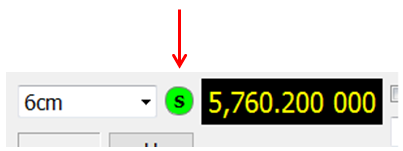
| If Split Operation is set to None Doppler tracking will not be enabled! |
-
On the right side of the main window select Tab 1 to present the traditional format for entering and choosing Tx messages.
The main window will reconfigure itself as necessary to display controls supporting the features of each mode.
-
If you are using transverters, set appropriate frequency offsets on the Settings | Frequencies tab. Offset is defined as (transceiver dial reading) minus (on-the-air frequency). For example, when using a 144 MHz radio at 10368 MHz, Offset (MHz) = (144 - 10368) = -10224.000. If the band is already in the table, you can edit the offset by double clicking on the offset field itself. Otherwise a new band can be added by right clicking in the table and selecting Insert.
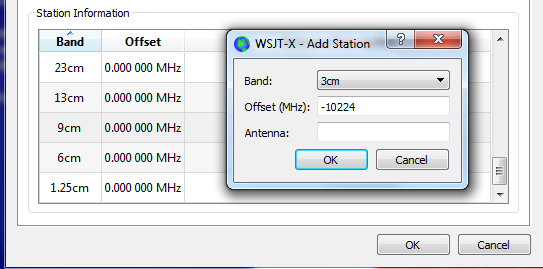
-
On the View menu, select Astronomical data to display a window with important information for tracking the Moon and performing automatic Doppler control. The right-hand portion of the window becomes visible when you check Doppler tracking.
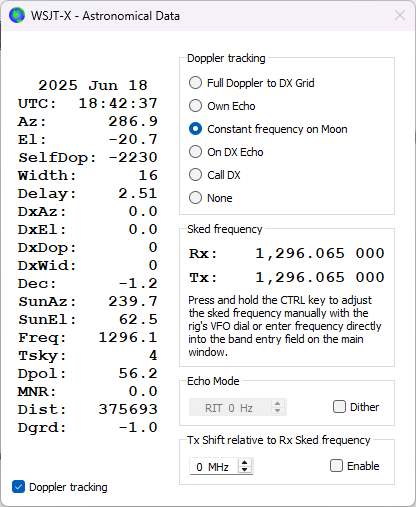
Five different types of Doppler tracking are provided:
-
Select Full Doppler to DX Grid if you know your QSO partner’s locator and he/she will not be using any Doppler control.
-
Select Own Echo to enable EME Doppler tracking of your receive frequency to your own echo frequency. Your Tx frequency will remain fixed and is set to the Sked frequency. This mode can be used when announcing your CQ call on a specific frequency and listening on your own echo frequency. It can also be used for echo testing with Echo mode.
-
Select Constant frequency on Moon (CFOM) to correct for your own one-way Doppler shift to or from the Moon. If your QSO partner does the same thing, both stations will have the required Doppler compensation. Moreover, anyone else using this option will hear both of you without the need for manual frequency changes.
-
Select On Dx Echo when your QSO partner announces his/her transmit frequency and that they are listening on their own echo frequency. When clicked, this Doppler method will set your rig frequency on receive to correct for the mutual Doppler shift. On transmit, your rig frequency will be set so that your QSO partner will receive you on the same frequency as they receive their own echo. Sked frequency in this case is set to that announced by your QSO partner.
-
Select Call DX after tuning the radio manually to find a station, with the Doppler mode initially set to None. You may be tuning the band looking for random stations, or to a frequency where a station has been seen on an SDR display. It is usually necessary to hold down the Ctrl key while tuning the radio. From the moment Call DX is pressed, your transmit frequency is set so that your echo will fall on the same frequency you (and the DX station) are listening.
| All the above Doppler methods assume that RIT in the receiver is set to zero. |
-
See Astronomical Data for details on the quantities displayed in this window.
9.2. JT4
JT4 is designed especially for EME on the microwave bands, 2.3 GHz and above.
-
Select JT4 from the Mode menu. The central part of the main window will look something like this:

-
Select the desired Submode, which determines the spacing of transmitted tones. Wider spacings are used on the higher microwave bands to allow for larger Doppler spreads. For example, submode JT4F is generally used for EME on the 5.7 and 10 GHz bands.
-
For EME QSOs some operators use short-form JT4 messages consisting of a single tone. To activate automatic generation of these messages, check the box labeled Sh. This also enables the generation of a single tone at 1000Hz by selecting Tx6, to assist in finding signals initially. The box labeled Tx6 toggles the Tx6 message from 1000Hz to 1250Hz to indicate to the other station that you are ready to receive messages.
-
Select Deep from the Decode menu. You may also choose to Enable averaging over successive transmissions and/or Enable deep search (correlation decoding).
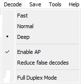
The following screen shot shows one transmission from a 10 GHz EME QSO using submode JT4F.
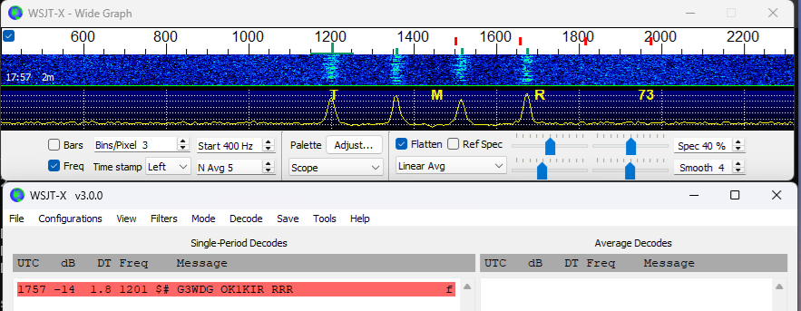
9.3. JT65
In many ways JT65 operation on VHF and higher bands is similar to HF usage, but a few important differences should be noted. Typical VHF/UHF operation involves only a single signal (or perhaps two or three) in the receiver passband. We recommend that you check Single decode on the Settings → General tab, and do not check Two pass decoding on the Advanced tab. With VHF features enabled the JT65 decoder will respond to special message formats often used for EME: the OOO signal report and two-tone shorthand messages for RO, RRR, and 73. These messages are always enabled for reception; they will be automatically generated for transmission if you check the shorthand message box Sh. Deep on the Decode menu will be automatically selected. You may optionally include Enable averaging, Enable Deep search, and Enable AP.
The following screen shot shows three transmissions from a 144 MHz EME QSO using submode JT65B and shorthand messages. Take note of the colored tick marks on the Wide Graph frequency scale. The green marker at 1220 Hz indicates the selected QSO frequency (the frequency of the JT65 Sync tone) and the F Tol range. A green tick at 1575 Hz marks the frequency of the highest JT65 data tone. Orange markers indicate the frequency of the upper tone of the two-tone signals for RO, RRR, and 73.
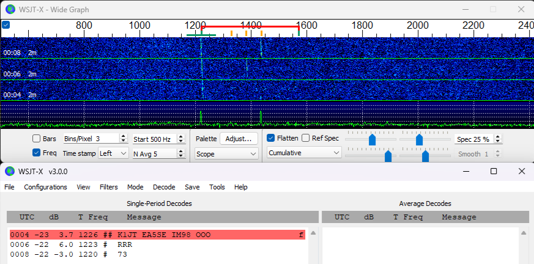
9.4. Q65
Q65 is designed for fast-fading signals: tropospheric scatter, rain scatter, ionospheric scatter, trans-equatorial propagation (TEP), EME, and the like. The following screen shot shows a series of ionospheric scatter QSOs using submode Q65-30A on the 6 meter band. The received signals were barely audible most of the time.
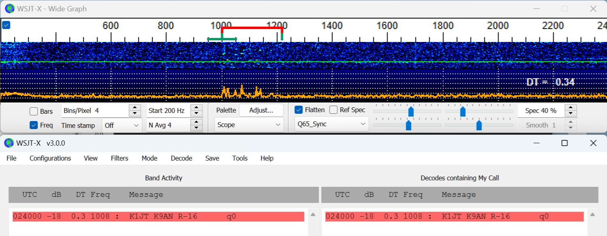
The Q65 decoder takes advantage of a priori (AP) information such as
the encoded forms of one’s own callsign and the message word CQ. In
normal usage, as a QSO progresses AP information increases to include
the callsign of the station being worked and perhaps his/her 4-digit
grid locator. The decoder takes advantage of whatever AP information
is currently available.
For Q65 EME QSOs on the microwave bands, some operators use short-form messages consisting of a single tone. To activate automatic generation of these messages, check the box labeled Sh. This also enables the generation of a single tone at 1000Hz by selecting Tx6, to assist in finding signals initially. The box labeled Tx6 switches the Tx6 message from 1000Hz to 1250Hz to indicate to the other station that you are ready to receive messages. These short-form messages are not decoded automatically, and auto-sequencing will not respond to them. You must recognize and interpret them yourself.
9.5. MSK144
Meteor scatter QSOs can be made any time on the VHF bands at distances up to about 2100 km (1300 miles). Completing a QSO takes longer in the evening than in the morning, longer at higher frequencies, and longer at distances close to the upper limit. But with patience, 100 W or more, and a single yagi it can usually be done. The following screen shot shows two 15-second reception intervals containing MSK144 signals from three different stations.
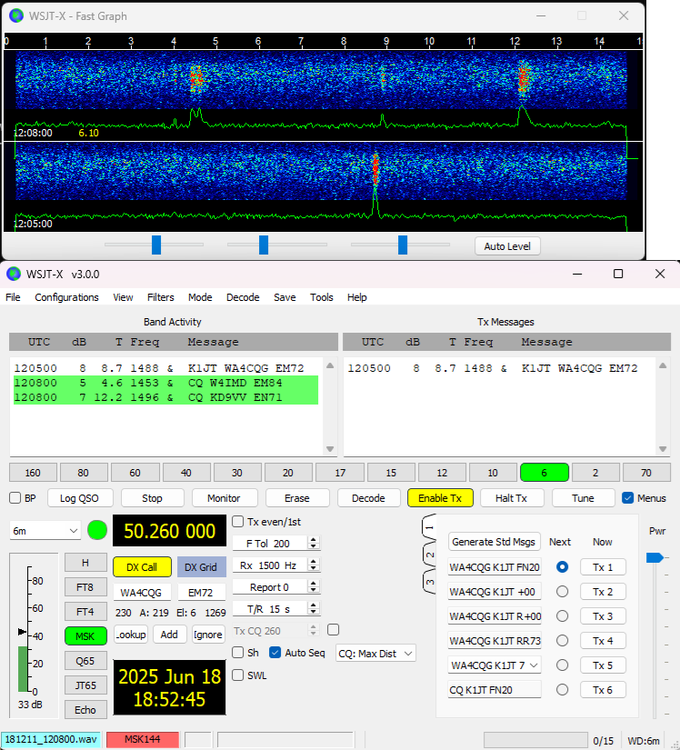
Unlike other WSJT-X modes, the MSK144 decoder operates in real time during the reception sequence. Decoded messages will appear on your screen almost as soon as you hear them.
To configure WSJT-X for MSK144 operation:
-
Select MSK144 from the Mode menu.
-
Select Fast from the Decode menu.
-
Set the audio receiving frequency to Rx 1500 Hz.
-
Set frequency tolerance to F Tol 100.
-
Set the T/R sequence duration to 15 s.
-
To match decoding depth to your computer’s capability, click Monitor (if it’s not already green) to start a receiving sequence. Observe the percentage figure displayed on the Receiving label in the Status Bar:

-
The displayed number (here 17%) indicates the fraction of available time being used for execution of the MSK144 real-time decoder. If this number is well below 100%, you may increase the decoding depth from Fast to Normal or Deep, and increase F Tol from 100 to 200 Hz.
| Most modern multi-core computers can easily handle the optimum parameters Deep and F Tol 200. Older and slower machines may not be able to keep up at these settings; at the Fast and Normal settings there will be a small loss in decoding capability (relative to Deep) for the weakest pings. |
-
T/R sequences of 15 seconds or less requires selecting your transmitted messages very quickly. Check Auto Seq to have the computer make the necessary decisions automatically, based on the messages received.
-
For operation at 144 MHz or above you may find it helpful to use short-format Sh messages for Tx3, Tx4, and Tx5. These messages are 20 ms long, compared with 72 ms for full-length MSK144 messages. Their information content is a 12-bit hash of the two callsigns, rather than the callsigns themselves, plus a 4-bit numerical report, acknowledgment (RRR), or sign-off (73). Only the intended recipient can decode short-messages. They will be displayed with the callsigns enclosed in <> angle brackets, as in the following model QSO
CQ K1ABC FN42 K1ABC W9XYZ EN37 W9XYZ K1ABC +02 <K1ABC W9XYZ> R+03 <W9XYZ K1ABC> RRR <K1ABC W9XYZ> 73There is little or no advantage to using MSK144 Sh messages at 50 or 70 MHz. At these frequencies, most pings are long enough to support standard messages — which have the advantage of being readable by anyone listening in.
9.6. Echo Mode
Echo mode provides tools for two types of measurements: echoes of your transmitted signal from the Moon, and broadband noise power received from the Sun, Moon, and possibly other sources including nearby ground. In each case the system noise temperature (noise power referred to the antenna terminals, expressed in Kelvin degrees) serves as the reference noise level. Such measurements are widely used for optimizing a station’s capabilities for Earth-Moon-Earth (EME) communication.
For lunar echoes, WSJT generates short fixed-frequency transmissions that alternate with reception intervals at the appropriate Doppler-shifted frequency. Be sure that Enable VHF and submode features has been checked on the Settings | General tab. With Split Operation set to Rig or Fake It on the Settings | Radio tab, check Doppler tracking and Own Echo on the Astronomical Data window. Point your antenna at the Moon and click Enable Tx on the main window to start a sequence of echo measurements. Each cycle takes 6 seconds. If strong enough, echoes will be visible in the waterfall. Their average spectrum will be displayed in the Echo Graph window, and numerical parameters of the measurements appear in the main window:
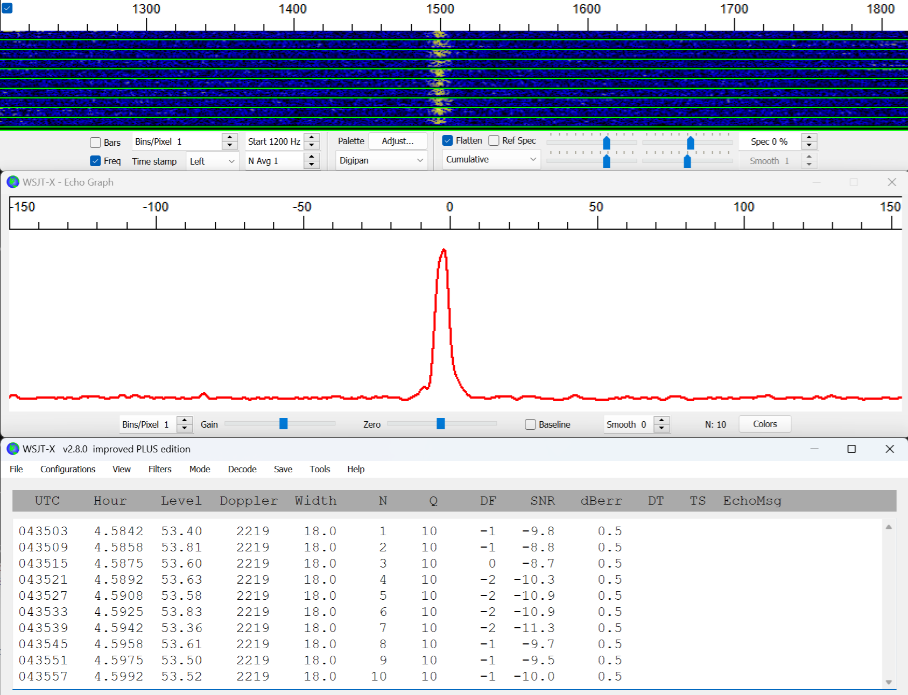
At the end of each echo cycle a line of data in the main text window displays the following information:
UTC Time in hhmmss format Hour UTC in hours and decimal fraction Level Relative received noise power (dB) Doppler EME Doppler shift at center of lunar disk Width EME Doppler spread over full lunar disk N Number of accumulated echo or monitor cycles Q Estimated quality of averaged data on a 0 – 10 scale DF Offset of spectral peak from 1500 Hz SNR Average signal-to-noise ratio (dB/2500 Hz) dBerr Estimated uncertainty of SNR
-
more to come …
9.7. Tips for EME
Until the advent of Q65, digital EME has mostly been done using JT65A on the 50 MHz band, JT65B on 144 and 432 MHz, and JT65C on 1296 MHz. On higher microwave bands typical choices have been JT65C, one of the wider JT4 submodes, or QRA64, depending on the expected amount of Doppler spread. We now recommend a suitable submode of Q65 (which has replaced QRA64) for EME on any VHF or higher band: for example, Q65-60A on 50 and 144 MHz, Q65-60B on 432 MHz, Q65-60C on 1296 MHz and 2.3 GHz, Q65-60D on 3.4 and 5.7 GHz, Q65-60D or E on 10 GHz, and Q65-60E on 24 GHz and higher bands. Depending on libration spreading and SNR, other submodes may perform better.
JT4, JT65, and Q65 offer Message Averaging — the summation of subsequent transmissions that convey the same message — to enable decodes at signal-to-noise ratios several dB below the threshold for single transmissions. JT4 and JT65 also allow Deep Search decoding, in which the decoder hypothesizes messages containing known or previously decoded callsigns and tests them for reliability using a correlation algorithm. JT65 and Q65 offer a priori (AP) decoding, which takes advantage of naturally accumulating information during a QSO.
For CW mode on SHF and microwave EME WSJT-X can be used to do Doppler shift correction if desired:
-
Check the Settings → Radio → Mode → None option, this stops WSJT-X from trying to set the mode of your rig.
-
Put you rig into CW mode as normal.
-
Before transmitting press Tune in WSJT-X, no tones will be transmitted as the rig is in CW mode, but importantly WSJT-X knows your are transmitting and adjusts the Doppler shift correction as needed for the currently selected Doppler shift correction mode in transmit.
-
When you have finish transmitting CW press Tune again to revert to receive mode and the correct Doppler shift correction for receiving.
| The above assumes you are already set up for WSJT-X Doppler shift correction with working CAT control, and Monitor enabled etc.. |
10. WSPR Mode
-
Select WSPR from the Mode menu. The main window will reconfigure itself to the WSPR interface, removing some controls not used in WSPR mode.
-
Set the Wide Graph controls as suggested below.
-
Use the mouse to drag the width and height of the main window to the desired size.
-
Select an active WSPR frequency (for example, 10.1387 or 14.0956 MHz).
If you will transmit in the 60 m band, be sure to choose a frequency that conforms with your local regulations. -
Click Monitor to start a 2-minute WSPR receiving period.
-
If you will be transmitting as well as receiving, select a suitable value for Tx Pct (average percentage of 2-minute sequences devoted to transmitting) and activate the Enable Tx button. Transmitting periods are also 2 minutes duration, and will occur randomly in time to reduce the chance of clashing with other stations you may be monitoring.
-
Select your Tx power (in dBm) from the drop-down list.
10.1. Band Hopping
WSPR mode allows those with CAT-controlled radios to investigate propagation on many bands without user intervention. Coordinated hopping enables a sizable group of stations around the world to move together from band to band, thereby maximizing the chances of identifying open propagation paths.
-
To enable automatic band hopping, check the Band Hopping box on the main window.
-
Click Schedule to open the WSPR Band Hopping window, and select the bands you wish to use at each time of day.

-
Band-switching occurs after each 2-minute interval. Preferred bands are identified with time slots in a repeating 20-minute cycle, according to the following table:
| Band: | 160 | 80 | 60 | 40 | 30 | 20 | 17 | 15 | 12 | 10 |
|---|---|---|---|---|---|---|---|---|---|---|
UTC minute: |
00 |
02 |
04 |
06 |
08 |
10 |
12 |
14 |
16 |
18 |
20 |
22 |
24 |
26 |
28 |
30 |
32 |
34 |
36 |
38 |
|
40 |
42 |
44 |
46 |
48 |
50 |
52 |
54 |
56 |
58 |
-
If the preferred band is not active according to your band-hopping schedule, a band will be selected at random from among the active bands.
-
If the box labeled Tune is checked for a particular band, WSJT-X transmits an unmodulated carrier for several seconds just after switching to that band and before the normal Rx or Tx period starts. This feature can be used to activate an automatic antenna tuner (ATU) to tune a multi-band antenna to the newly selected band.
-
Depending on your station and antenna setup, band changes might require other switching besides retuning your radio. To make this possible in an automated way, whenever WSJT-X executes a successful band-change command to a CAT-controlled radio, it looks for an executable file or script named
user_hardware. This is done usingCMD /C user_hardware <band>on Windows, or/bin/sh -c user_hardware <band>on other platforms, where band is described below. On Windows the first file with any extension listed on the PATHEXT environment variable added to the file name rootuser_hardware, and found in the directories listed on the PATH environment variable will be executed. On other platforms, the first executable script, or program, nameduser_hardwarefound in a directory listed on the PATH environment variable will be executed.user_hardware nnn
-
In the above command
nnnis the band-designation wavelength in meters. You must write your own program, script, or batch file to do the necessary switching at your station.
| The use of the PATH (and PATHEXT on Windows) environment variables is a new feature. To emulate previous behavior make sure that the location of your user_hardware script or program is on the PATH environment variable used by WSJT-X. |
The following screen shot is an example of WSPR operation with band hopping enabled:

A careful look at the screen shot above illustrates some of the impressive capabilities of the WSPR decoder. For example, look at the decodes at UTC 0152, 0154, and 0156 along with the corresponding minutes from the waterfall display below. Yellow ovals have been added to highlight two isolated signals decoded at -28 and -29 dB in the first and third two-minute interval. At 0154 UTC signals from VE3FAL, AB4QS, and K5CZD fall within a 5 Hz interval near audio frequency 1492 Hz; similarly, K3FEF, DL2XL/P, and LZ1UBO fall within a 6 Hz interval near 1543 Hz. Each of the overlapping signals is decoded flawlessly.

11. On-Screen Controls
11.1. Menus
Menus at top of the main window offer many options for configuration and operation. Most of the items are self-explanatory; a few additional details are provided below. Keyboard shortcuts for some frequently used menu items are listed at the right edge of the menu.
11.1.1. WSJT-X menu

This menu appears on the Macintosh only. Settings appears here, labeled as Preferences, rather than on the File menu. About WSJT-X appears here rather than on the Help menu.
11.1.3. Configuration Menu
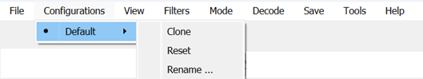
Many users prefer to create and use entries on the Configurations menu for switching between modes. Simply Clone the Default entry, Rename it as desired, and then make all desired settings for that configuration. These settings are restored whenever you select that configuration.
As well as switching between configurations while running WSJT-X, you
can also start the application from the command line in any desired
configuration. Use the command-line option
--config <configuration-name>, or -c for short, as in these
examples for configurations FT8 and Echo:
wsjtx --config FT8 wsjtx -c Echo
11.1.4. View Menu
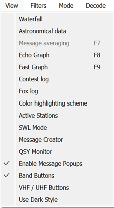
Active Stations displays a window that can help you to work the most distant stations, in particular for the distance-scored ARRL International Digital Contest. Controls are provided to set the maximum length of the list and the maximum “age” of decodes in Rx sequences. You can request display of only ready-to-be-called stations. For the ARRL International Digital Contest the window displays scoring rate (points in the most recent hour), total score, and the number of band changes in the past hour.
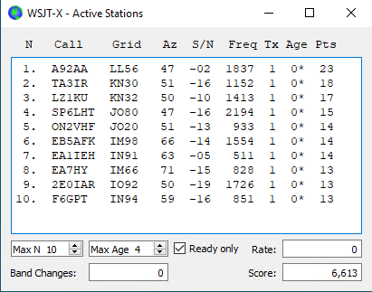
SWL Mode reduces the WSJT-X main window to a minimum size with just the menus, decodes windows, and status bar visible. You may find this useful when running multiple instances of the application. Both size and location of the main window are saved and recalled independently for this view.

11.2. Button Row
The following controls appear just under the decoded text windows on the main screen. Some of them are visible only in certain modes.
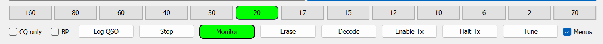
-
When CQ only is checked, only messages from stations calling CQ are displayed in the left text panel.
-
Log QSO raises a dialog window pre-filled with known information about a QSO you have nearly completed. You can edit or add to this information before clicking OK to log the QSO. If you check Prompt me to log QSO on the File → Settings → Reporting tab, the program raises the confirmation screen automatically when you send a message containing 73. Start Date and Start Time are set when you click to send the Tx 2 or Tx 3 message, and backed up by one or two sequence lengths, respectively. (Note that the actual start time may have been earlier if repeats of early transmissions were required.) End date and time are set when the Log QSO screen is invoked.
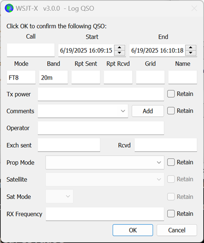
-
Stop terminates normal data acquisition in case you want to freeze the waterfall or open and explore a previously recorded audio file.
-
Monitor toggles normal receive operation on or off. This button is highlighted in green when WSJT-X is receiving. If you are using CAT control, toggling Monitor OFF relinquishes control of the rig; if Monitor returns to last used frequency is selected on the File → Settings → General tab, toggling Monitor back ON will return to the original frequency.
-
Erase clears the right-hand decoded text window. Double-clicking Erase clears both text windows.
Right-clicking on either text window brings up a context menu with several options (including Erase) which operate on that window alone. -
Clear Avg is present only in modes that support message averaging. It provides a way to erase the accumulating information, thus preparing to start a new average.
-
Decode tells the program to repeat the decoding procedure at the Rx frequency (green marker on waterfall scale), using the most recently completed sequence of received data.
-
Enable Tx toggles automatic T/R sequencing mode on or off and highlights the button in red when ON. A transmission will start at the beginning of the selected (odd or even) sequence, or immediately if appropriate. Toggling the button to OFF during a transmission allows the current transmission to finish.
-
Halt Tx terminates a transmission immediately and disables automatic T/R sequencing.
-
Tune toggles the program into Tx mode and generates an unmodulated carrier at the specified Tx frequency (red marker on waterfall scale). This process is useful for adjusting an antenna tuner or tuning an amplifier. The button is highlighted in red while Tune is active. Toggle the button a second time or click Halt Tx to terminate the Tune process.
| Activating Tune interrupts a receive sequence and will prevent decoding during that sequence. |
-
Uncheck the box Menus to make the top-of-window menus disappear, leaving more vertical space for decoded messages.
11.3. Left
Controls related to frequency selection, received audio level, the station being called, and date and time are found in the lower, left-hand section of the main window. Buttons are provided for making quick changes among the modes FT8, FT4, MSK144, Q65, and JT65, and for toggling FT8 Hound mode ON or OFF.
-
A drop-down list of frequencies and bands in the upper, left-hand corner lets you select the operating band. It also sets dial frequency to a value taken from the Frequencies tab on the Settings window. If CAT control is active, the radio’s dial frequency is set accordingly; if not, you must tune the radio manually.
-
Alternatively, you can enter a frequency (in MHz) or band name in recognized ADIF format, for example 630m, 20m, or 70cm. The band-name format works only if a working frequency has been set for that band and mode, in which case the first such match is selected.
-
You can also enter a frequency increment in kHz above the currently displayed integer MHz. For example, if the displayed frequency is 10,368.100, enter
165k(don’t forget thek!) to QSY to 10,368.165. -
A small colored circle appears in green if the CAT control is activated and functional. The green circle contains the character S if the rig is detected to be in Split mode. The circle becomes red if you have requested CAT control but communication with the radio has been lost.
Many Icom rigs cannot be queried for split status, current VFO or split transmit frequency. When using WSJT-X with such radios you should not change the current VFO, split status or dial frequency using controls on the radio. -
If DX Grid contains a valid Maidenhead locator, the corresponding great-circle azimuth and distance from your location are displayed.
-
The program can maintain a database of callsigns and locators for future reference. Click Add to insert the present call and locator in the database; click Lookup to retrieve the locator for a previously stored call. This feature is mainly useful for situations in which the number of active stations is modest and reasonably stable, such as EME (Earth-Moon-Earth) communication. The callsign file name is
CALL3.TXT.
11.4. Center
At the center of the main window are a number of controls used when making QSOs. Controls not relevant to a particular mode or submode may be "grayed out" (disabled) or removed from the display.
-
Check Tx even/1st to transmit in even-numbered UTC minutes or sequences, starting at 0. Uncheck this box to transmit in the odd sequences. The correct selection is made automatically when you double-click on a decoded text line, as described in the Basic Operating Tutorial.
-
The Tx and Rx audio frequencies can be set automatically by double-clicking decoded text or a signal in the waterfall. They can also be adjusted using the spinner controls.
-
You can force Tx frequency to the current Rx frequency by clicking the Tx←Rx button, and vice-versa for Rx←Tx. The on-the-air frequency of your lowest JT9 or JT65 tone is the sum of dial frequency and audio Tx frequency.
-
Check the box Hold Tx Freq to ensure that the specified Tx frequency is not changed automatically when you double-click on decoded text or a signal in the waterfall.
-
For modes lacking a multi-decode feature, or when Enable VHF/UHF/Microwave features has been checked on the File → Settings → General tab, the F Tol control sets a frequency tolerance range over which decoding is attempted, centered on the Rx frequency.
-
The Report control lets you change an automatically inserted signal report. Typical reports for the various modes fall in the range –30 to +20 dB. Remember that JT65 reports saturate at an upper limit of -1 dB.
Consider reducing power if your QSO partner reports your signal above -5 dB in one of the WSJT-X slow modes. These are supposed to be weak signal modes! -
In some circumstances, especially on VHF and higher bands, you can select a supported submode of the active mode by using the Submode control. The Sync control sets a minimum threshold for establishing time and frequency synchronization with a received signal.
-
Spinner control T/R xx s sets sequence lengths for transmission and reception in Q65, MSK144, and the fast JT9 modes.
-
With Split operation activated on the File → Settings → Radio tab, in MSK144 and the fast JT9 submodes you can activate the spinner control Tx CQ nnn by checking the box to its right. The program will then generate something like
CQ nnn K1ABC FN42for your CQ message, wherennnis the kHz portion of your current operating frequency, in the range 010 to 999. Your CQ message Tx6 will then be transmitted at the calling frequency selected in the Tx CQ nnn spinner control. All other messages will be transmitted at your current operating frequency. On reception, when you double-click on a message likeCQ nnn K1ABC FN42your rig will QSY to the specified frequency so you can call the station at his specified response frequency. -
Checkboxes at bottom center of the main window control special features for particular operating modes:
-
Sh enables shorthand messages in JT4, JT65, Q65, and MSK144 modes
-
Fast enables fast JT9 submodes
-
Auto Seq enables auto-sequencing of Tx messages
-
Call 1st enables automatic response to the first decoded responder to your CQ
-
Tx6 toggles between two types of shorthand messages in JT4 and Q65 modes
-
11.5. Tx Messages
Controls familiar to users of program WSJT appear on Tab 1, providing six fields for message entry. Pre-formatted messages for the standard minimal QSO are generated when you click Generate Std Msgs or double-click on an appropriate line in one of the decoded text windows.
-
Select the next message to be transmitted (at the start of your next Tx sequence) by clicking the radio button in the Next column.
-
To change to a specified Tx message immediately during a transmission, click a rectangular button in the Now column. Changing a Tx message in mid-stream slightly reduces the chance of a correct decode, but it is usually OK if done in the first 10-20% of a transmission.
-
All six Tx message fields are editable. You can modify an automatically generated message or enter a desired message, keeping in mind the limits on message content. See Protocol Specifications for details.
-
Click the pull-down arrow for message #5 to select one of the stored messages entered on the Files → Settings → Tx Macros tab. Pressing Enter on a modified message #5 automatically adds that message to the stored macros.
-
In some circumstances it may be desirable to make your QSOs as short as possible. To configure the program to start contacts with message #2, disable message #1 by double-clicking its radio-button in the Next column or Tx 1 button in the Now column. Similarly, to send RR73 rather than RRR for message #4, double-click one of its buttons.
During a transmission the actual message being sent always appears in the first box of the status bar (bottom-left corner of the main screen).
11.6. Status Bar
A Status Bar at the bottom edge of the main window provides useful information about operating conditions.
Labels on the Status Bar display such information as the program’s current operating state, configuration name, operating mode, and the content of your most recent transmitted message. The first label (operating state) can be Receiving, Tx (for Transmitting), Tx: Tune, or the name of the file opened from the File menu. This label is highlighted in green for Receiving, yellow for Tx, red for Tune, and light blue for a file name. When transmitting, the Tx message is displayed exactly as it will be decoded by receiving stations. The second label (as shown above) will be absent if you are using the Default setting on the Configurations menu. A progress bar shows the elapsed fraction of a Tx or Rx sequence. Finally, if the Watchdog (WD) timer was enabled on the Files | Settings | General tab, a label in the lower right-hand corner displays the number of minutes remaining before timeout.
| Temporary status messages may occasionally be displayed here for a few seconds when background processing completes. |
11.7. Wide Graph
The following controls appear at the bottom of the Wide Graph window. Decoding occurs only in the displayed frequency range; otherwise, controls on the Wide Graph window have no effect on the decoding process.
-
Bins/Pixel controls the displayed frequency resolution. Set this value to 1 for the highest possible resolution, or to higher numbers to compress the spectral display. Normal operation with a convenient window size works well at 2 to 8 bins per pixel.
-
Start nnn Hz sets the low-frequency starting point of the waterfall frequency scale.
-
N Avg is the number of successive spectra to be averaged before updating the display. Values around 5 are suitable for normal JT9 and JT65 operation. Adjust N Avg to make the waterfall move faster or slower, as desired.
-
A dropdown list below the Palette label lets you select from a wide range of waterfall color palettes.
-
Click Adjust to activate a window that allows you to import or export a user-defined palette.
-
Check Flatten if you want WSJT-X to compensate for a sloping or uneven response across the received passband. For this feature to work properly, you should restrict the range of displayed frequencies so that only the active part of the spectrum is shown.
-
Select Current or Cumulative for the spectrum displayed in the bottom one-third of the Wide Graph window. Current is the average spectrum over the most recent N Avg FFT calculations. Cumulative is the average spectrum since the start of the present UTC minute. Linear Avg is useful in JT4 mode, especially when short-form messages are used.
-
Four sliders control reference levels and scaling for waterfall colors and the spectrum plot. Values around midscale are usually about right, depending on the input signal level, the chosen palette, and your own preferences. Hover the mouse over a control to display a tip reminding you of its function.
-
The Spec nn% control is used to set the fractional height of the spectrum plotted below the waterfall.
-
Smooth is active only when Linear Average is selected. Smoothing the displayed spectrum over more than one bin can enhance your ability to detect weak EME signals with Doppler spread more than a few Hz.
11.8. Fast Graph
The waterfall palette used for the Fast Graph is the same as the one selected on the Wide Graph. Three sliders at the bottom of the Fast Graph window can be used to optimize gain and zero-offset for the displayed information. Hover the mouse over a control to display a tip reminding you of its function. Clicking the Auto Level button produces reasonable settings as a starting point.

11.9. Echo Graph
The following controls appear at the bottom of the Echo Graph:
-
Bins/Pixel controls the displayed frequency resolution. Set this value to 1 for the highest possible resolution, or to higher numbers to compress the spectral display.
-
Gain and Zero sliders control scaling and offset of plotted spectra.
-
Smooth values greater than 0 apply running averages to the plotted spectra, thereby smoothing the curves over multiple bins.
-
Label N shows the number of echo pulses averaged.
-
Click the Colors button to cycle through six possible choices of color and line width for the plots.
11.10. Miscellaneous
Most windows can be resized as desired. If you are short of screen space you can make the Main Window and Wide Graph smaller by hiding some controls and labels. To enable this feature uncheck the box labeled Controls at top left of the Wide Graph window, or the box Menus to the right of the Tune button on the Main Window.
12. Logging
A basic logging facility in WSJT-X saves QSO information to files
named wsjtx.log (in comma-separated text format) and wsjtx_log.adi
(in standard ADIF format). These files can be imported directly into
other programs (such as spreadsheets and popular logging programs).
As described in the Installation and Platform
Dependencies sections, different operating systems may place your
local log files in different locations. You can always navigate to
them directly by selecting Open log directory from the File menu.
More elaborate logging capabilities are supported by third party applications like JTAlert, which can log QSOs automatically to other applications including Ham Radio Deluxe, DX Lab Suite, and Log4OM.
The program option Show DXCC entity and worked before status
(selectable on the File | Settings | General tab) is intended mostly for
use on non-Windows platforms, where JTAlert is not available. When
this option is checked, WSJT-X appends some additional information to
all CQ messages displayed in the Band Activity window. The name of
the DXCC entity is shown, abbreviated if necessary. Your “worked
before” status for this callsign (according to log file
wsjtx_log.adi) is indicated by highlighting colors, if that option
is selected.
WSJT-X includes a built-in cty.dat file containing DXCC prefix
information. Updated files can be downloaded from the Amateur Radio Country Files web
site when required. If an updated and readable cty.dat file is
present in the logs folder, it is used in preference to the
built-in file.
The log file wsjtx_log.adi is updated whenever you log a QSO from
WSJT-X. (Keep in mind that if you erase this file, you lose all
“worked before” information.) You can append or overwrite the
wsjtx_log.adi file by exporting your QSO history as an ADIF file
from another logging program. Turning Show DXCC entity and worked
before status off and then on again causes WSJT-X to re-read
the log file. Very large log files may cause WSJT-X to slow down
when searching for calls. If the ADIF log file has been changed
outside of WSJT-X you can force WSJT-X to reload the file from the
Settings | Colors tab using the Rescan ADIF Log button, see
Decode Highlighting.
Additional features are provided for Contest and Fox logging. (more to come, here …)
13. Decoder Notes
13.1. AP Decoding
The WSJT-X decoders for FST4, FT4, FT8, JT65, and Q65 include procedures that use naturally accumulating information during a minimal QSO. This a priori (AP) information increases sensitivity of the decoder by up to 4 dB, at the cost of a slightly higher rate of false decodes. AP is optional in FT8 and JT65, but is always enabled for Q65 and for FT4 and FST4 when decode depth is Normal or Deep.
For example: when you decide to answer a CQ, you already know your own callsign and that of your potential QSO partner. The software therefore “knows” what might be expected for at least 57 message bits (28 for each of two callsigns, one or more for message type) in the next received message. The decoder’s task is thus reduced to determining the remaining 15 bits of the message and ensuring that the resulting solution is reliable.
AP decoding starts by setting AP bits to the hypothesized values, as
if they had been received correctly. We then determine whether the
remaining message and parity bits are consistent with the hypothesized
AP bits, with a specified level of confidence. Successful AP decodes
are labeled with an end-of-line indicator of the form aP, where P
is one of the single-digit AP decoding types listed in Table 1. For
example, a2 indicates that the successful decode used MyCall as
hypothetically known information. Type a7, used only in FT8 mode,
uses information from the previous Rx sequence.
| aP | Message components |
|---|---|
a1 |
|
a2 |
|
a3 |
|
a4 |
|
a5 |
|
a6 |
|
a7 |
|
If a codeword is found that is judged to have high (but not
overwhelmingly high) probability of being correct, a ? character is
appended when the decoded message is displayed. To avoid misleading
spots of occasional false decodes, messages so marked are not
forwarded to PSK Reporter.
Table 2 lists the six possible QSO states that are tracked by the WSJT-X auto-sequencer, along with the type of AP decoding that would be attempted in each state in FT4 or FT8. The FST4 table (not shown) is the same except that it omits the decoding attempts for AP types 4 and 5 to save time.
| State | AP type |
|---|---|
CALLING STN |
|
REPORT |
|
ROGER_REPORT |
|
ROGERS |
|
SIGNOFF |
|
CALLING CQ |
|
Decoding with a priori information behaves slightly differently in JT65. Some details are provided in Tables 3 and 4.
| aP | Message components |
|---|---|
a1 |
|
a2 |
|
a3 |
|
a4 |
|
a5 |
|
a6 |
|
a7 |
|
| State | AP type |
|---|---|
CALLING STN |
|
REPORT |
|
ROGER_REPORT |
|
ROGERS |
|
SIGNOFF |
|
CALLING CQ |
|
13.2. Decoded Lines
Displayed information accompanying decoded messages generally includes UTC, signal-to-noise ratio in dB, time offset DT in seconds, and audio frequency in Hz. Some modes include additional information such as frequency offset from nominal (DF), frequency drift (Drift or F1), or distance (km or mi).
There may also be some cryptic characters with special meanings summarized in the following Table:
| Mode | Mode character | Sync character | End of line information |
|---|---|---|---|
FST4 |
` |
? aP |
|
FT4 |
+ |
? aP |
|
FT8 |
~ |
? aP |
|
JT4 |
$ |
*, # |
f, fN, dCN |
JT9 |
@ |
||
JT65 |
# |
||
JT65 VHF |
# |
*, # |
f, fN, dCN |
Q65 |
: |
qP |
|
MSK144 |
& |
- Sync character
-
*- Normal sync
#- Alternate sync - End of line information
-
?- Decoded with lower confidence
a- Decoded with aid of some a priori (AP) information
C- Confidence indicator [Deep Search; (0-9,*)]
d- Deep Search algorithm
f- Franke-Taylor or Fano algorithm
N- Number of Rx intervals or frames averaged
P- Number indicating type of AP information (Table 1 or Table 6)
| qP | Message components |
|---|---|
q0 |
|
q1 |
|
q2 |
|
q3 |
|
q4 |
|
q5 |
|
14. Measurement Tools
14.1. Frequency Calibration
Many WSJT-X capabilities depend on signal-detection bandwidths of no more than a few Hz. Frequency accuracy and stability are therefore unusually important. We provide tools to enable accurate frequency calibration of your radio, as well as precise frequency measurement of on-the-air signals. The calibration procedure works by automatically cycling your CAT-controlled radio through a series of preset frequencies of carrier-based signals at reliably known frequencies, measuring the error in dial frequency for each signal.
You will probably find it convenient to define and use a special Configuration dedicated to frequency calibration. Then complete the following steps, as appropriate, for your system.
-
Switch to FreqCal mode
-
In the Working Frequencies box on the File | Settings | Frequencies tab, delete any default frequencies for FreqCal mode that are not relevant for your location. You may want to replace some of them with reliably known frequencies receivable at your location.
We find major-city AM broadcast stations generally serve well as frequency calibrators at the low frequency end of the spectrum. In North America we also use the standard time-and-frequency broadcasts of WWV at 2.500, 5.000, 10.000, 15.000, and 20.000 MHz, and CHU at 3.330, 7.850, and 14.670 MHz. Similar shortwave signals are available in other parts of the world. -
In most cases, start by deleting any existing file
fmt.allin the directory where your log files are kept. -
To cycle automatically through your chosen list of calibration frequencies, check Execute frequency calibration cycle on the Tools menu. WSJT-X will spend 30 seconds at each frequency. Initially no measurement data is saved to the
fmt.allfile although it is displayed on screen; this allows you to check your current calibration parameters. -
During the calibration procedure, the radio’s USB dial frequency is offset 1500 Hz below each FreqCal entry in the default frequencies list. As shown in the screen shot below, detected signal carriers therefore appear at about 1500 Hz in the WSJT-X waterfall.
-
To start a measurement session, check the Measure option and let the calibration cycle run for at least one complete sequence. Note that, while measuring, any existing calibration parameters are automatically disabled so you may have to increase the FTol range if your rig is off frequency by more than a few Hertz in order to capture valid measurements.

With modern synthesized radios, small measured offsets from 1500 Hz will exhibit a straight-line dependence on frequency. You can approximate the calibration of your radio by simply dividing the measured frequency offset (in Hz) at the highest reliable frequency by the nominal frequency itself (in MHz). For example, the 20 MHz measurement for WWV shown above produced a measured tone offset of 24.6 Hz, displayed in the WSJT-X decoded text window. The resulting calibration constant is 24.6/20=1.23 parts per million. This number may be entered as Slope on the File | Settings | Frequencies tab.
A more precise calibration can be effected by fitting the intercept and slope of a straight line to the whole sequence of calibration measurements, as shown for these measurements in the graph plotted below. Software tools for completing this task are included with the WSJT-X installation, and detailed instructions for their use are available at https://wsjt.sourceforge.io/FMT_User.pdf.
Using these tools and no specialized hardware beyond your CAT-interfaced radio, you can calibrate the radio to better than 1 Hz and compete very effectively in the ARRL’s periodic Frequency Measuring Tests.

After running Execute frequency calibration cycle at least once with
good results, check and edit the file fmt.all in the log directory
and delete any spurious or outlier measurements. The line-fitting
procedure can then be carried out automatically by clicking Solve for
calibration parameters on the Tools menu. The results are
displayed as in the following screen shot. Estimated uncertainties
are included for slope and intercept; N is the number of averaged
frequency measurements included in the fit, and StdDev is the root
mean square deviation of averaged measurements from the fitted
straight line. If the solution seems valid, you are offered an
Apply button to push that automatically sets the calibration
parameters in File | Settings | Frequencies | Frequency Calibration.

For a quick visual check of the resulting calibration, stay in FreqCal mode with the Measure option cleared. WSJT-X shows the adjusted results directly on the waterfall and the displayed records.
14.2. Reference Spectrum
WSJT-X provides a tool that can be used to determine the detailed
shape of your receiver’s passband. Disconnect your antenna or tune to
a quiet frequency with no signals. With WSJT-X running in one of
the slow modes, select Measure reference spectrum from the Tools
menu. Wait for about a minute and then click Stop. A file
named refspec.dat appears in your log directory. When you check
Ref Spec on the Wide Graph, the recorded reference spectrum will
then be used to flatten your overall effective passband.
14.3. Phase Equalization
Measure phase response under the Tools menu is for advanced MSK144 users. Phase equalization is used to compensate for group-delay variation across your receiver passband. Careful application of this facility can reduce intersymbol interference, resulting in improved decoding sensitivity. If you use a software-defined receiver with linear-phase filters there is no need to apply phase equalization.
After a frame of received data has been decoded, Measure phase response generates an undistorted audio waveform equal to the one generated by the transmitting station. Its Fourier transform is then used as a frequency-dependent phase reference to compare with the phase of the received frame’s Fourier coefficients. Phase differences between the reference spectrum and received spectrum include contributions from the originating station’s transmit filter, the propagation channel, and filters in the receiver. If the received frame originates from a station known to transmit signals having little phase distortion (such as a station known to use a properly adjusted software-defined transceiver), and if the received signal is relatively free from multipath distortion so that the channel phase is close to linear, the measured phase differences will be representative of the local receiver’s phase response.
Complete the following steps to generate a phase equalization curve:
-
Record a number of
wavfiles that contain decodable signals from your chosen reference station. Best results are obtained when the signal-to-noise ratio of the reference signals is 10 dB or greater. -
Enter the callsign of the reference station in the DX Call box.
-
Select Measure phase response from the Tools menu, and open each of the
wavfiles in turn. The mode character on decoded text lines changes from&to^while WSJT-X is measuring the phase response, and it changes back to&after the measurement is completed. The program needs to average a number of high-SNR frames to accurately estimate the phase, so it may be necessary to process severalwavfiles. The measurement can be aborted at any time by selecting Measure phase response again to toggle the phase measurement off.When the measurement is complete, WSJT-X saves the measured phase response in the Log directory, in a file with suffix ".pcoeff". The filename contains the callsign of the reference station and a timestamp, for example
K0TPP_170923_112027.pcoeff. -
Select Equalization tools … under the Tools menu and click the Phase … button to view the contents of the Log directory. Select the desired pcoeff file. The measured phase values will be plotted as filled circles along with a fitted red curve labeled "Proposed". This is the proposed phase equalization curve. It’s a good idea to repeat the phase measurement several times, using different wav files for each measurement, to ensure that your measurements are repeatable.
-
Once you are satisfied with a fitted curve, click the Apply button to save the proposed response. The red curve is replaced with a light green curve labeled "Current" to indicate that the phase equalization curve is now being applied to the received data. Another curve labeled "Group Delay" appears. The "Group Delay" curve shows the group delay variation across the passband, in ms. Click the Discard Measured button to remove the captured data from the plot, leaving only the applied phase equalization curve and corresponding group delay curve.
-
To revert to no phase equalization, click the Restore Defaults button followed by the Apply button.
The three numbers printed at the end of each MSK144 decode line can be
used to assess the improvement provided by equalization. These numbers
are: N = Number of frames averaged, H = Number of hard bit errors
corrected, and E = Size of MSK eye diagram opening.
Here is a decode of K0TPP obtained while Measure phase response was measuring the phase response:
103900 17 6.5 1493 ^ WA8CLT K0TPP +07 1 0 1.2
The "^" symbol indicates that a phase measurement is being accumulated but is not yet finished. The three numbers at the end of the line indicate that one frame was used to obtain the decode, there were no hard bit errors, and the eye-opening was 1.2 on a -2 to +2 scale. Here’s how the same decode looks after phase equalization:
103900 17 6.5 1493 & WA8CLT K0TPP +07 1 0 1.6
In this case, equalization has increased the eye-opening from 1.2 to 1.6. Larger positive eye openings are associated with reduced likelihood of bit errors and higher likelihood that a frame will be successfully decoded. In this case, the larger eye-opening tells us that phase equalization was successful, but it is important to note that this test does not by itself tell us whether the applied phase equalization curve is going to improve decoding of signals other than those from the reference station, K0TPP.
It’s a good idea to carry out before and after comparisons using a
large number of saved wav files with signals from many different
stations, to help decide whether your equalization curve improves
decoding for most signals. When doing such comparisons, keep in mind
that equalization may cause WSJT-X to successfully decode a frame
that was not decoded before equalization was applied. For this
reason, be sure that the time "T" of the two decodes are the same
before comparing their end-of-line quality numbers.
When comparing before and after decodes having the same "T", keep in
mind that a smaller first number means that decoding has improved,
even if the second and third numbers appear to be "worse". For
example, suppose that the end-of-line quality numbers before
equalization are 2 0 0.2 and after equalization 1 5 -0.5. These
numbers show improved decoding because the decode was obtained using
only a single frame after equalization whereas a 2-frame average was
needed before equalization. This implies that shorter and/or weaker
pings could be decodable.
| Further details on phase equalization and examples of fitted phase curves and eye diagrams can be found in the article on MSK144 by K9AN and K1JT published in QEX. |
15. Cooperating Programs
WSJT-X is programmed to cooperate closely with several other useful programs.
-
DX Lab Suite, Omni-Rig, and Ham Radio Deluxe were described in the section on rig control.
-
PSK Reporter, by Philip Gladstone, is a web server that gathers reception reports sent by various other programs, including WSJT-X. The information is made available in near real time on a world map, and also as statistical summaries of various kinds. A number of options are available to the user; for example, you can request a map showing world-wide JT65 activity on all amateur bands over the past hour. Such a map might look like this, where different colors represent different bands:

The following screen shot shows the PSK Reporter map configured to show MSK144 reports:

-
JTAlert, by VK3AMA, is available only for Windows. It provides many operating aids including automatic logging to several third-party logging programs, audio and visual alerts following a number of optional alert conditions (decoding of a new DXCC, new state, etc.), and convenient direct access to web services such as callsign lookup.
-
AlarmeJT, by F5JMH, is available only for Linux. The program keeps its own logbook. It fetches contact information from WSJT-X and provides visual alerts for new DXCC entities and grid squares on the current band, as well as other options.
-
JT-Bridge, by SM0THU, is available for OS X. It works together with logging applications Aether, MacLoggerDX, RUMlog or RUMlogNG. It checks QSO and QSL status of the call and DXCC entity, as well as many other features.
-
N1MM Logger+ is a free, full-feature contest logging application. It is only available for Windows. WSJT-X can send logged QSO information to it via a network connection.
-
Writelog is a non-free, full-feature contest logging application. It is only available for Windows. WSJT-X can send logged QSO information to it via a network connection.
16. Platform Dependencies
A few WSJT-X features behave differently in Windows, Linux, or OS X, or may not be relevant to all operating platforms.
16.1. File locations
-
Windows
-
Settings: %LOCALAPPDATA%\WSJT-X\WSJT-X.ini
-
Log directory: %LOCALAPPDATA%\WSJT-X\
-
Default save directory: %LOCALAPPDATA%\WSJT-X\save\
-
-
Windows, when using "--rig-name=xxx"
-
Settings: %LOCALAPPDATA%\WSJT-X - xxx\WSJT-X - xxx.ini
-
Log directory: %LOCALAPPDATA%\WSJT-X - xxx\
-
Default save directory: %LOCALAPPDATA%\WSJT-X - xxx\save\
-
-
Linux
-
Settings: ~/.config/WSJT-X.ini
-
Log directory: ~/.local/share/WSJT-X/
-
Default save directory: ~/.local/share/WSJT-X/save/
-
-
Linux, when using "--rig-name=xxx"
-
Settings: ~/.config/WSJT-X - xxx.ini
-
Log directory: ~/.local/share/WSJT-X - xxx/
-
Default save directory: ~/.local/share/WSJT-X - xxx/save/
-
-
Macintosh
-
Settings: ~/Library/Preferences/WSJT-X.ini
-
Log directory: ~/Library/Application Support/WSJT-X/
-
Default save directory: ~/Library/Application Support/WSJT-X/save/
-
-
Macintosh, when using "--rig-name=xxx"
-
Settings: ~/Library/Preferences/WSJT-X - xxx.ini
-
Log directory: ~/Library/Application Support/WSJT-X - xxx/
-
Default save directory: ~/Library/Application Support/WSJT-X - xxx/save/
-
17. Frequently Asked Questions
-
My displayed spectrum is flatter when I do not check the Flatten box. What’s wrong?
WSJT-X does not expect a steep filter edge within the displayed passband. Use a wider IF filter or reduce the displayed passband by decreasing Bins/Pixel, increasing Start, or reducing the width of the Wide Graph. You might also choose to re-center the filter passband, if such control is available.
-
How should I configure WSJT-X to run multiple instances?
Start WSJT-X from a command-prompt window, assigning each a unique identifier as in the following two-instance example. This procedure will isolate the Settings file and the writable file location for each instance of WSJT-X.
wsjtx --rig-name=TS590 wsjtx --rig-name=FT847
-
I am getting a "Network Error - SSL/TLS support not installed" message. What should I do?
You need to install suitable OpenSSL libraries - see Instructions to install OpenSSL.
-
I occasionally get Rig Control Errors if I adjust my Icom rig’s VFO. What’s wrong?
By default, most Icom transceivers have *CI-V Transceive Mode" enabled. This will cause unsolicited CAT traffic from the rig that disrupts CAT control by a PC. Disable this option in the rig’s menu.
-
I want to control my transceiver with another application as well as WSJT-X, is that possible?
This only possible to do reliably via some kind of rig control server. That server must be able to accept both WSJT-X and the other application(s) as clients. Using a dumb serial port splitter like the VSPE tool is not supported; it may work but it is not reliable due to unmanaged CAT control collisions. Applications like the Hamlib Rig Control Server (rigctld), Omni-Rig, and DX Lab Suite Commander are potentially suitable; WSJT-X can act as a client to them all.
-
Rig control through OmniRig seems to fail when I click Test CAT. What can I do about it?
Omni-Rig apparently has a bug that appears when you click Test CAT. Forget using Test CAT and just click OK. Omni-Rig then behaves normally.
-
I am running WSJT-X under Ubuntu. The program starts, but the menu bar is missing from the top of the main window and the hot-keys don’t work.
Ubuntu’s new “Unity” desktop puts the menu for the currently active window at the top of the primary display screen. You can restore menu bars to their traditional locations by typing the following in a command-prompt window:
sudo apt remove appmenu-qt5
Alternatively, you can disable the common menu bar for just WSJT-X by starting the application with the environment variable QT_QPA_PLATFORMTHEME set to empty (the space after the '=' character is necessary):
QT_QPA_PLATFORMTHEME= wsjtx
-
I am running WSJT-X on Linux using a KDE desktop. Why does Menu→Configurations misbehave?
The KDE development team have added code to Qt that tries to automatically add shortcut accelerator keys to all buttons including pop up menu buttons. This interferes with operation of the application (many other Qt applications have similar issues with KDE). Until this is fixed by the KDE team you must disable this feature. Edit the file
~/.config/kdeglobalsand add a section containing the following:[Development] AutoCheckAccelerators=false
See https://stackoverflow.com/a/32711483 and https://bugs.kde.org/show_bug.cgi?id=337491 for more details.
18. Protocol Specifications
18.1. Overview
All QSO modes use structured messages that compress user-readable information into fixed-length packets. JT4, JT9, and JT65 use 72-bit payloads. Standard messages consist of two 28-bit fields normally used for callsigns and a 15-bit field for a grid locator, report, acknowledgment, or 73. An additional bit flags a message containing arbitrary free text, up to 13 characters. Special cases allow other information such as add-on callsign prefixes (e.g., ZA/K1ABC) or suffixes (e.g., K1ABC/P) to be encoded. The basic aim is to compress the most common messages used for minimally valid QSOs into a fixed 72-bit length.
Information payloads for FST4, FT4, FT8, Q65, and MSK144 contain 77 bits. The 5 additional bits are used to flag special message types used for nonstandard callsigns, contest exchanges, FT8 DXpedition Mode, and a few other possibilities. Full details have been published in QEX, see The FT4 and FT8 Communication Protocols.
A standard amateur callsign consists of a one- or two-character prefix, at least one of which must be a letter, followed by a digit and a suffix of one to three letters. Within these rules, the number of possible callsigns is equal to 37×36×10×27×27×27, or somewhat over 262 million. (The numbers 27 and 37 arise because in the first and last three positions a character may be absent, or a letter, or perhaps a digit.) Since 228 is more than 268 million, 28 bits are enough to encode any standard callsign uniquely. Similarly, the number of 4-digit Maidenhead grid locators on earth is 180×180 = 32,400, which is less than 215 = 32,768; so a grid locator requires 15 bits.
Some 6 million of the possible 28-bit values are not needed for
callsigns. A few of these slots are assigned to special message
components such as CQ, DE, and QRZ. CQ may be followed by three
digits to indicate a desired callback frequency. (If K1ABC transmits
on a standard calling frequency such as 50.280, and sends CQ 290 K1ABC
FN42, it means that s/he will listen on 50.290 and respond there to
any replies.) A numerical signal report of the form –nn or
R–nn can be sent in place of a grid locator. (As originally
defined, numerical signal reports nn were required to fall between -01
and -30 dB. Recent program versions 2.3 and later accommodate reports between
-50 and +49 dB.) A country prefix or portable suffix may be
attached to one of the callsigns. When this feature is used, the
additional information is sent in place of the grid locator or by
encoding additional information into some of the 6 million available
slots mentioned above.
As a convenience for sending directed CQ messages, the 72-bit
compression algorithm supports messages starting with CQ AA through
CQ ZZ. These message fragments are encoded internally as if they
were the callsigns E9AA through E9ZZ. Upon reception they are
converted back to the form CQ AA through CQ ZZ, for display to the
user.
To be useful on channels with low signal-to-noise ratio, this kind of lossless message compression requires use of a strong forward error correcting (FEC) code. Different codes are used for each mode. Accurate synchronization of time and frequency is required between transmitting and receiving stations. As an aid to the decoders, each protocol includes a “sync vector” of known symbols interspersed with the information-carrying symbols. Generated waveforms for all of the WSJT-X modes have continuous phase and constant envelope.
18.2. Slow Modes
18.2.1. FST4
FST4 offers T/R sequence lengths of 15, 30, 60, 120, 300, 900, and 1800 seconds. Submodes are given names like FST4-60, FST4-120, etc., the appended numbers indicating sequence length in seconds. A 24-bit cyclic redundancy check (CRC) is appended to the 77-bit message payload to create a 101-bit message-plus-CRC word. Forward error correction is accomplished using a (240,101) LDPC code. Transmissions consist of 160 symbols: 120 information-carrying symbols of two bits each, interspersed with five groups of eight predefined synchronization symbols. Modulation uses 4-tone frequency-shift keying (4-GFSK) with Gaussian smoothing of frequency transitions.
18.2.2. FT4
Forward error correction (FEC) in FT4 uses a low-density parity check (LDPC) code with 77 information bits, a 14-bit cyclic redundancy check (CRC), and 83 parity bits making a 174-bit codeword. It is thus called an LDPC (174,91) code. Synchronization uses four 4×4 Costas arrays, and ramp-up and ramp-down symbols are inserted at the start and end of each transmission. Modulation is 4-tone frequency-shift keying (4-GFSK) with Gaussian smoothing of frequency transitions. The keying rate is 12000/576 = 20.8333 baud. Each transmitted symbol conveys two bits, so the total number of channel symbols is 174/2 + 16 + 2 = 105. The total bandwidth is 4 × 20.8333 = 83.3 Hz.
18.2.3. FT8
FT8 uses the same LDPC (174,91) code as FT4. Modulation is 8-tone frequency-shift keying (8-GFSK) at 12000/1920 = 6.25 baud. Synchronization uses 7×7 Costas arrays at the beginning, middle, and end of each transmission. Transmitted symbols carry three bits, so the total number of channel symbols is 174/3 + 21 = 79. The total occupied bandwidth is 8 × 6.25 = 50 Hz.
18.2.4. JT4
FEC in JT4 uses a strong convolutional code with constraint length K=32, rate r=1/2, and a zero tail. This choice leads to an encoded message length of (72+31) x 2 = 206 information-carrying bits. Modulation is 4-tone frequency-shift keying (4-FSK) at 11025 / 2520 = 4.375 baud. Each symbol carries one information bit (the most significant bit) and one synchronizing bit. The two 32-bit polynomials used for convolutional encoding have hexadecimal values 0xf2d05351 and 0xe4613c47, and the ordering of encoded bits is scrambled by an interleaver. The pseudo-random sync vector is the following sequence (60 bits per line):
000011000110110010100000001100000000000010110110101111101000 100100111110001010001111011001000110101010101111101010110101 011100101101111000011011000111011101110010001101100100011111 10011000011000101101111010
18.2.5. JT9
FEC in JT9 uses the same strong convolutional code as JT4: constraint length K=32, rate r=1/2, and a zero tail, leading to an encoded message length of (72+31) × 2 = 206 information-carrying bits. Modulation is nine-tone frequency-shift keying, 9-FSK at 12000.0/6912 = 1.736 baud. Eight tones are used for data, one for synchronization. Eight data tones means that three data bits are conveyed by each transmitted information symbol. Sixteen symbol intervals are devoted to synchronization, so a transmission requires a total of 206 / 3 + 16 = 85 (rounded up) channel symbols. The sync symbols are those numbered 1, 2, 5, 10, 16, 23, 33, 35, 51, 52, 55, 60, 66, 73, 83, and 85 in the transmitted sequence. Tone spacing of the 9-FSK modulation for JT9A is equal to the keying rate, 1.736 Hz. The total occupied bandwidth is 9 × 1.736 = 15.6 Hz.
18.2.6. JT65
A detailed description of the JT65 protocol was published in QEX for September-October, 2005. A Reed Solomon (63,12) error-control code converts 72-bit user messages into sequences of 63 six-bit information-carrying symbols. These are interleaved with another 63 symbols of synchronizing information according to the following pseudo-random sequence:
100110001111110101000101100100011100111101101111000110101011001 101010100100000011000000011010010110101010011001001000011111111
The synchronizing tone is normally sent in each interval having a “1” in the sequence. Modulation is 65-FSK at 11025/4096 = 2.692 baud. Frequency spacing between tones is equal to the keying rate for JT65A, and 2 and 4 times larger for JT65B and JT65C, respectively. For EME QSOs the signal report OOO is sometimes used instead of numerical signal reports. It is conveyed by reversing sync and data positions in the transmitted sequence. Shorthand messages for RO, RRR, and 73 dispense with the sync vector entirely and use time intervals of 16384/11025 = 1.486 s for pairs of alternating tones. The lower frequency is the same as that of the sync tone used in long messages, and the frequency separation is 110250/4096 = 26.92 Hz multiplied by n for JT65A, with n = 2, 3, 4 used to convey the messages RO, RRR, and 73, respectively.
18.2.7. Q65
Q65 is intended for scatter, EME, and other extreme weak-signal applications. Forward error correction (FEC) uses a specially designed (65,15) block code with six-bit symbols. Two symbols are “punctured” from the code and not transmitted, thereby yielding an effective (63,13) code with a payload of k = 13 information symbols conveyed by n = 63 channel symbols. The punctured symbols consist of a 12-bit CRC computed from the 13 information symbols. The CRC is used to reduce the false-decode rate to a very low value. A 22-symbol pseudorandom sequence spread throughout a transmission is sent as “tone 0” and used for synchronization. The total number of channel symbols in a Q65 transmission is thus 63 + 22 = 85. Q65 offers T/R sequence lengths of 15, 30, 60, 120, and 300 s, and submodes A - E have tone spacings 1, 2, 4, 8, and 16 times the symbol rate. Submode designations include a number for sequence length and a letter for tone spacing, as in Q65-15A, Q65-120C, etc. Occupied bandwidths are 65 times the tone spacing, ranging from 19 Hz (Q65-300A) to a maximum of 1733 Hz (Q65-15C, Q65-30D, and Q65-60E).
18.2.8. WSPR
WSPR is designed for probing potential radio propagation paths using low power beacon-like transmissions. WSPR signals convey a callsign, Maidenhead grid locator, and power level using a compressed data format with strong forward error correction and narrow-band 4-FSK modulation. The protocol is effective at signal-to-noise ratios as low as –31 dB in a 2500 Hz bandwidth.
WSPR messages can have one of three possible formats illustrated by the following examples:
-
Type 1: K1ABC FN42 37
-
Type 2: PJ4/K1ABC 37
-
Type 3: <PJ4/K1ABC> FK52UD 37
Type 1 messages contain a standard callsign, a 4-character Maidenhead grid locator, and power level in dBm. Type 2 messages omit the grid locator but include a compound callsign, while type 3 messages replace the callsign with a 15-bit hash code and include a 6-character locator as well as the power level. Lossless compression techniques squeeze all three message types into exactly 50 bits of user information. Standard callsigns require 28 bits and 4-character grid locators 15 bits. In Type 1 messages, the remaining 7 bits convey the power level. In message types 2 and 3 these 7 bits convey power level along with an extension or re-definition of fields normally used for callsign and locator. Together, these compression techniques amount to “source encoding” the user message into the smallest possible number of bits.
WSPR uses a convolutional code with constraint length K=32 and rate r=1/2. Convolution extends the 50 user bits into a total of (50 + K – 1) × 2 = 162 one-bit symbols. Interleaving is applied to scramble the order of these symbols, thereby minimizing the effect of short bursts of errors in reception that might be caused by fading or interference. The data symbols are combined with an equal number of synchronizing symbols, a pseudo-random pattern of 0’s and 1’s. The 2-bit combination for each symbol is the quantity that determines which of four possible tones to transmit in any particular symbol interval. Data information is taken as the most significant bit, sync information the least significant. Thus, on a 0 – 3 scale, the tone for a given symbol is twice the value (0 or 1) of the data bit, plus the sync bit.
18.2.9. FST4W
FST4W offers T/R sequence lengths of 120, 300, 900, and 1800 seconds. Submodes are given names like FST4W-120, FST4W-300, etc., the appended numbers indicating sequence length in seconds. Message payloads contain 50 bits, and a 24-bit cyclic redundancy check (CRC) appended to create a 74-bit message-plus-CRC word. Forward error correction is accomplished using a (240,74) LDPC code. Transmissions consist of 160 symbols: 120 information-carrying symbols of two bits each, interspersed with five groups of eight predefined synchronization symbols. Modulation uses 4-tone frequency-shift keying (4-GFSK) with Gaussian smoothing of frequency transitions.
18.2.10. Summary
Table 7 provides a brief summary of parameters for the slow modes in WSJT-X. Parameters K and r specify the constraint length and rate of the convolutional codes; n and k specify the sizes of the (equivalent) block codes; Q is the alphabet size for the information-carrying channel symbols; Sync Energy is the fraction of transmitted energy devoted to synchronizing symbols; and S/N Threshold is the signal-to-noise ratio (in a 2500 Hz reference bandwidth) above which the probability of decoding is 50% or higher.
| Mode | FEC Type | (n,k) | Q | Modulation type | Keying rate (Baud) | Bandwidth (Hz) | Sync Energy | Tx Duration (s) | S/N Threshold (dB) |
|---|---|---|---|---|---|---|---|---|---|
FST4-15 |
LDPC |
(240,101) |
4 |
4-GFSK |
16.67 |
66.7 |
0.25 |
9.6 |
-20.7 |
FST4-30 |
LDPC |
(240,101) |
4 |
4-GFSK |
7.14 |
28.6 |
0.25 |
22.4 |
-24.2 |
FST4-60 |
LDPC |
(240,101) |
4 |
4-GFSK |
3.09 |
12.4 |
0.25 |
51.8 |
-28.1 |
FST4-120 |
LDPC |
(240,101) |
4 |
4-GFSK |
1.46 |
5.9 |
0.25 |
109.3 |
-31.3 |
FST4-300 |
LDPC |
(240,101) |
4 |
4-GFSK |
0.558 |
2.2 |
0.25 |
286.7 |
-35.3 |
FST4-900 |
LDPC |
(240,101) |
4 |
4-GFSK |
0.180 |
0.72 |
0.25 |
887.5 |
-40.2 |
FST4-1800 |
LDPC |
(240,101) |
4 |
4-GFSK |
0.089 |
0.36 |
0.25 |
1792.0 |
-43.2 |
FT4 |
LDPC |
(174,91) |
4 |
4-GFSK |
20.83 |
83.3 |
0.15 |
5.04 |
-17.5 |
FT8 |
LDPC |
(174,91) |
8 |
8-GFSK |
6.25 |
50.0 |
0.27 |
12.6 |
-21 |
JT4A |
K=32, r=1/2 |
(206,72) |
2 |
4-FSK |
4.375 |
17.5 |
0.50 |
47.1 |
-23 |
JT9A |
K=32, r=1/2 |
(206,72) |
8 |
9-FSK |
1.736 |
15.6 |
0.19 |
49.0 |
-26 |
JT65A |
RS |
(63,12) |
64 |
65-FSK |
2.692 |
177.6 |
0.50 |
46.8 |
-25 |
Q65-15A |
QRA |
(63,13) |
64 |
65-FSK |
6.667 |
433 |
0.26 |
12.8 |
-22.2 |
Q65-30A |
QRA |
(63,13) |
64 |
65-FSK |
3.333 |
217 |
0.26 |
25.5 |
-24.8 |
Q65-60A |
QRA |
(63,13) |
64 |
65-FSK |
1.667 |
108 |
0.26 |
51.0 |
-27.6 |
Q65-120A |
QRA |
(63,13) |
64 |
65-FSK |
0.750 |
49 |
0.26 |
113.3 |
-30.8 |
Q65-300A |
QRA |
(63,13) |
64 |
65-FSK |
0.289 |
19 |
0.26 |
293.8 |
-33.8 |
WSPR |
K=32, r=1/2 |
(162,50) |
2 |
4-FSK |
1.465 |
5.9 |
0.50 |
110.6 |
-31 |
FST4W-120 |
LDPC |
(240,74) |
4 |
4-GFSK |
1.46 |
5.9 |
0.25 |
109.3 |
-32.8 |
FST4W-300 |
LDPC |
(240,74) |
4 |
4-GFSK |
0.558 |
2.2 |
0.25 |
286.7 |
-36.8 |
FST4W-900 |
LDPC |
(240,74) |
4 |
4-GFSK |
0.180 |
0.72 |
0.25 |
887.5 |
-41.7 |
FST4W-1800 |
LDPC |
(240,74) |
4 |
4-GFSK |
0.089 |
0.36 |
0.25 |
1792.0 |
-44.8 |
LDPC = Low Density Parity Check RS = Reed Solomon QRA = Q-ary Repeat Accumulate
Submodes of JT4, JT9, and JT65 offer wider tone spacings for circumstances that may require them, such as significant Doppler spread. Table 8 summarizes the tone spacings, bandwidths, and approximate threshold sensitivities of the various submodes when spreading is comparable to tone spacing.
| Mode | Tone Spacing | BW (Hz) | S/N (dB) |
|---|---|---|---|
JT4A |
4.375 |
17.5 |
-23 |
JT4B |
8.75 |
30.6 |
-22 |
JT4C |
17.5 |
56.9 |
-21 |
JT4D |
39.375 |
122.5 |
-20 |
JT4E |
78.75 |
240.6 |
-19 |
JT4F |
157.5 |
476.9 |
-18 |
JT4G |
315.0 |
949.4 |
-17 |
JT9A |
1.736 |
15.6 |
-26 |
JT9B |
3.472 |
29.5 |
-26 |
JT9C |
6.944 |
57.3 |
-25 |
JT9D |
13.889 |
112.8 |
-24 |
JT9E |
27.778 |
224.0 |
-23 |
JT9F |
55.556 |
446.2 |
-22 |
JT9G |
111.111 |
890.6 |
-21 |
JT9H |
222.222 |
1779.5 |
-20 |
JT65A |
2.692 |
177.6 |
-25 |
JT65B |
5.383 |
352.6 |
-25 |
JT65C |
10.767 |
702.5 |
-25 |
| T/R Period (s) | A Spacing Width (Hz) | B Spacing Width (Hz) | C Spacing Width (Hz) | D Spacing Width (Hz) | E Spacing Width (Hz) |
|---|---|---|---|---|---|
15 |
6.67 433 |
13.33 867 |
26.67 1733 |
N/A |
N/A |
30 |
3.33 217 |
6.67 433 |
13.33 867 |
26.67 1733 |
N/A |
60 |
1.67 108 |
3.33 217 |
6.67 433 |
13.33 867 |
26.67 1733 |
120 |
0.75 49 |
1.50 98 |
3.00 195 |
6.00 390 |
12.00 780 |
300 |
0.29 19 |
0.58 38 |
1.16 75 |
2.31 150 |
4.63 301 |
18.3. Fast Modes
18.3.1. JT9
The JT9 slow modes all use keying rate 12000/6912 = 1.736 baud. By contrast, with the Fast setting submodes JT9E-H adjust the keying rate to match the increased tone spacings. Message durations are therefore much shorter, and they are sent repeatedly throughout each Tx sequence. For details see Table 9, below.
18.3.2. MSK144
Standard MSK144 messages are structured in the same way as in FT8, with 77 bits of user information. Forward error correction is implemented by first augmenting the 77 message bits with a 13-bit cyclic redundancy check (CRC) calculated from the message bits. The CRC is used to detect and eliminate most false decodes at the receiver. The resulting 90-bit augmented message is mapped to a 128-bit codeword using a (128,90) binary low-density-parity-check (LDPC) code designed by K9AN specifically for this purpose. Two 8-bit synchronizing sequences are added to make a message frame 144 bits long. Modulation is Offset Quadrature Phase-Shift Keying (OQPSK) at 2000 baud. Even-numbered bits are conveyed over the in-phase channel, odd-numbered bits on the quadrature channel. Individual symbols are shaped with half-sine profiles, thereby ensuring a generated waveform with constant envelope, equivalent to a Minimum Shift Keying (MSK) waveform. Frame duration is 72 ms, so the effective character transmission rate for standard messages is up to 250 cps.
MSK144 also supports short-form messages that can be used after QSO partners have exchanged both callsigns. Short messages consist of 4 bits encoding R+report, RRR, or 73, together with a 12-bit hash code based on the ordered pair of “to” and “from” callsigns. Another specially designed LDPC (32,16) code provides error correction, and an 8-bit synchronizing vector is appended to make up a 40-bit frame. Short-message duration is thus 20 ms, and short messages can be decoded from very short meteor pings.
The 72 ms or 20 ms frames of MSK144 messages are repeated without gaps for the full duration of a transmission cycle. For most purposes, a cycle duration of 15 s is suitable and recommended for MSK144.
The modulated MSK144 signal occupies the full bandwidth of a SSB transmitter, so transmissions are always centered at audio frequency 1500 Hz. For best results, transmitter and receiver filters should be adjusted to provide the flattest possible response over the range 300Hz to 2700Hz. The maximum permissible frequency offset between you and your QSO partner ± 200 Hz.
18.3.3. Summary
| Mode | FEC Type | (n,k) | Q | Modulation Type | Keying rate (Baud) | Bandwidth (Hz) | Sync Energy | Tx Duration (s) |
|---|---|---|---|---|---|---|---|---|
JT9E |
K=32, r=1/2 |
(206,72) |
8 |
9-FSK |
25.0 |
225 |
0.19 |
3.400 |
JT9F |
K=32, r=1/2 |
(206,72) |
8 |
9-FSK |
50.0 |
450 |
0.19 |
1.700 |
JT9G |
K=32, r=1/2 |
(206,72) |
8 |
9-FSK |
100.0 |
900 |
0.19 |
0.850 |
JT9H |
K=32, r=1/2 |
(206,72) |
8 |
9-FSK |
200.0 |
1800 |
0.19 |
0.425 |
MSK144 |
LDPC |
(128,90) |
2 |
OQPSK |
2000 |
2400 |
0.11 |
0.072 |
MSK144 Sh |
LDPC |
(32,16) |
2 |
OQPSK |
2000 |
2400 |
0.20 |
0.020 |
19. Astronomical Data
A text box entitled Astronomical Data provides information needed for tracking the sun or moon, compensating for EME Doppler shift, and estimating EME Doppler spread and path degradation. Toggle the Astronomical data on the View menu to display or hide this window.
Available information includes the current UTC Date and Time; Az and El, azimuth and elevation of the moon at your own location, in degrees; SelfDop, Width, and Delay, the Doppler shift, full limb-to-limb Doppler spread in Hz, and delay of your own EME echoes in seconds; and DxAz and DxEl, DxDop, and DxWid, corresponding parameters for a station located at the DX Grid entered on the main window. These numbers are followed by Dec, the declination of the moon; SunAz and SunEl, the azimuth and elevation of the Sun; Freq, your stated operating frequency in MHz; Tsky, the estimated sky background temperature in the direction of the moon, scaled to the operating frequency; Dpol, the spatial polarization offset in degrees; MNR, the maximum non-reciprocity of the EME path in dB, owing to a combination of Faraday rotation and spatial polarization; Dist, the distance from your location to the moon, in km; and finally Dgrd, an estimate of the signal degradation in dB, relative to the best possible time with the moon at perigee in a cold part of the sky.
On the higher microwave bands, where Faraday rotation is minimal and linear polarization is often used, spatial offset reduces signal levels. Some stations have implemented mechanical polarisation adjustment to overcome this loss. The amount of rotation needed is predicted in real time by the value of Dpol. Positive Dpol means that the antenna should be rotated in a clockwise direction looking from behind the antenna towards the moon. For a dish antenna, the feed should similarly be rotated clockwise looking into the mouth of the feed. A negative value for Dpol means a counterclockwise rotation.
The state-of-the-art for establishing three-dimensional locations of the sun, moon, and planets at a specified time is embodied in a numerical model of the solar system maintained at the Jet Propulsion Laboratory. The model has been numerically integrated to produce tabular data that can be interpolated with very high accuracy. For example, the celestial coordinates of the moon or a planet can be determined at a specified time to within about 0.0000003 degrees. The JPL ephemeris tables and interpolation routines have been incorporated into WSJT-X. Further details on accuracy, especially concerning calculated EME Doppler shifts, are described in QEX for November-December, 2016.
The sky background temperatures reported by WSJT-X are derived from the all-sky 408 MHz map of Haslam et al. (Astronomy and Astrophysics Supplement Series, 47, 1, 1982), scaled by frequency to the -2.6 power. This map has angular resolution of about 1 degree, and of course most amateur EME antennas have much broader beamwidths than this. Your antenna will therefore smooth out the hot spots considerably, and the observed extremes of sky temperature will be less. Unless you understand your sidelobes and ground reflections extremely well, it is unlikely that more accurate sky temperatures would be of much practical use.
20. Utility Programs
The WSJT-X packages include program rigctl-wsjtx[.exe], which
can be used to send CAT sequences to a rig from the command line, or
from a batch file or shell script; and program rigctld-wsjtx[.exe],
which allows other compatible applications to share a CAT connection
to a rig. These program versions include the latest Hamlib rig
drivers — the same ones used by WSJT-X itself.
Additional utility programs jt4code, jt9code, and jt65code
let you explore the conversion of user-level messages into channel
symbols or “tone numbers,” and back again. These programs can be
useful to someone designing a beacon generator, for understanding the
permissible structure of transmitted messages, and for studying
behavior of the error-control codes.
Channel-symbol values for JT4 run from 0 to 3. The total number of
symbols in a transmitted message is 206. To run jt4code, enter the
program name followed by a JT4 message enclosed in quotes. In Windows
the command and program output might look like this:
C:\WSJTX\bin> jt4code "G0XYZ K1ABC FN42"
Message Decoded Err? Type
-------------------------------------------------------------------
1. G0XYZ K1ABC FN42 G0XYZ K1ABC FN42 1: Std Msg
Channel symbols 2 0 0 1 3 2 0 2 3 1 0 3 3 2 2 1 2 1 0 0 0 2 0 0 2 1 1 2 0 0 2 0 2 0 2 0 2 0 2 3 0 3 1 0 3 1 0 3 0 1 1 1 1 1 0 1 0 0 2 3 2 2 3 0 2 1 3 3 3 3 2 0 2 1 2 3 0 0 2 3 1 1 1 0 3 1 2 0 3 2 0 2 3 3 0 1 2 1 2 1 0 1 0 1 1 1 1 3 0 3 0 3 2 3 3 0 3 0 1 0 3 3 3 0 0 3 2 1 3 2 3 1 3 3 2 2 0 2 3 3 2 1 1 0 2 2 3 3 1 2 3 1 1 2 1 1 1 0 2 1 2 0 2 3 1 2 3 1 2 2 1 2 0 0 3 3 1 1 1 1 2 0 3 3 0 2 2 2 3 3 0 0 0 1 2 3 3 2 1 1 1 3 2 3 0 3
Channel-symbol values for JT9 run from 0 to 8, with 0 representing the sync tone. The total number of symbols in a transmitted message is 85. Enter the program name followed by a JT9 message enclosed in quotes:
C:\WSJTX\bin> jt9code "G0XYZ K1ABC FN42"
Message Decoded Err? Type
-------------------------------------------------------------------
1. G0XYZ K1ABC FN42 G0XYZ K1ABC FN42 1: Std Msg
Channel symbols 0 0 7 3 0 3 2 5 4 0 1 7 7 7 8 0 4 8 8 2 2 1 0 1 1 3 5 4 5 6 8 7 0 6 0 1 8 3 3 7 8 1 1 2 4 5 8 1 5 2 0 0 8 6 0 5 8 5 1 0 5 8 7 7 2 0 4 6 6 6 7 6 0 1 8 8 5 7 2 5 1 5 0 4 0
For the corresponding program jt65code only the
information-carrying channel symbols are shown, and the symbol values
range from 0 to 63. Sync symbols lie two tone intervals below data
tone 0, and the sequential locations of sync symbols are described in
the JT65 Protocol section of this Guide.
A typical execution of jt65code is shown below. The program
displays the packed message of 72 bits, shown here as 12 six-bit
symbol values, followed by the channel symbols:
C:\WSJTX\bin> jt65code "G0XYZ K1ABC FN42"
Message Decoded Err? Type
----------------------------------------------------------------------
1. G0XYZ K1ABC FN42 G0XYZ K1ABC FN42 1: Std Msg
Packed message, 6-bit symbols 61 36 45 30 3 55 3 2 14 5 33 40
Information-carrying channel symbols 56 40 8 40 51 47 50 34 44 53 22 53 28 31 13 60 46 2 14 58 43 41 58 35 8 35 3 24 1 21 41 43 0 25 54 9 41 54 7 25 21 9 62 59 7 43 31 21 57 13 59 41 17 49 19 54 21 39 33 42 18 2 60
For an illustration of the power of the strong error-control coding in JT9 and JT65, try looking at the channel symbols after changing a single character in the message. For example, change the grid locator from FN42 to FN43 in the JT65 message:
C:\WSJTX\bin> jt65code "G0XYZ K1ABC FN43"
Message Decoded Err? Type
----------------------------------------------------------------------
1. G0XYZ K1ABC FN43 G0XYZ K1ABC FN43 1: Std Msg
Packed message, 6-bit symbols 61 36 45 30 3 55 3 2 14 5 33 41
Information-carrying channel symbols
25 35 47 8 13 9 61 40 44 9 51 6 8 40 38 34 8 2 21 23 30
51 32 56 39 35 3 50 48 30 8 5 40 18 54 9 24 30 26 61 23 11
3 59 7 7 39 1 25 24 4 50 17 49 52 19 34 7 4 34 61 2 61
You will discover that every possible JT65 message differs from every other possible JT65 message in at least 52 of the 63 information-carrying channel symbols.
Execution of any of these utility programs with "-t" as the only
command-line argument produces examples of all supported message
types. For example, using jt65code -t:
C:\WSJTX\bin> jt65code -t
Message Decoded Err? Type -------------------------------------------------------------------------- 1. CQ WB9XYZ EN34 CQ WB9XYZ EN34 1: Std Msg 2. CQ DX WB9XYZ EN34 CQ DX WB9XYZ EN34 1: Std Msg 3. QRZ WB9XYZ EN34 QRZ WB9XYZ EN34 1: Std Msg 4. KA1ABC WB9XYZ EN34 KA1ABC WB9XYZ EN34 1: Std Msg 5. KA1ABC WB9XYZ RO KA1ABC WB9XYZ RO 1: Std Msg 6. KA1ABC WB9XYZ -21 KA1ABC WB9XYZ -21 1: Std Msg 7. KA1ABC WB9XYZ R-19 KA1ABC WB9XYZ R-19 1: Std Msg 8. KA1ABC WB9XYZ RRR KA1ABC WB9XYZ RRR 1: Std Msg 9. KA1ABC WB9XYZ 73 KA1ABC WB9XYZ 73 1: Std Msg 10. KA1ABC WB9XYZ KA1ABC WB9XYZ 1: Std Msg 11. CQ 000 WB9XYZ EN34 CQ 000 WB9XYZ EN34 1: Std Msg 12. CQ 999 WB9XYZ EN34 CQ 999 WB9XYZ EN34 1: Std Msg 13. CQ EU WB9XYZ EN34 CQ EU WB9XYZ EN34 1: Std Msg 14. CQ WY WB9XYZ EN34 CQ WY WB9XYZ EN34 1: Std Msg 15. ZL/KA1ABC WB9XYZ ZL/KA1ABC WB9XYZ 2: Type 1 pfx 16. KA1ABC ZL/WB9XYZ KA1ABC ZL/WB9XYZ 2: Type 1 pfx 17. KA1ABC/4 WB9XYZ KA1ABC/4 WB9XYZ 3: Type 1 sfx 18. KA1ABC WB9XYZ/4 KA1ABC WB9XYZ/4 3: Type 1 sfx 19. CQ ZL4/KA1ABC CQ ZL4/KA1ABC 4: Type 2 pfx 20. DE ZL4/KA1ABC DE ZL4/KA1ABC 4: Type 2 pfx 21. QRZ ZL4/KA1ABC QRZ ZL4/KA1ABC 4: Type 2 pfx 22. CQ WB9XYZ/VE4 CQ WB9XYZ/VE4 5: Type 2 sfx 23. HELLO WORLD HELLO WORLD 6: Free text 24. ZL4/KA1ABC 73 ZL4/KA1ABC 73 6: Free text 25. KA1ABC XL/WB9XYZ KA1ABC XL/WB9 * 6: Free text 26. KA1ABC WB9XYZ/W4 KA1ABC WB9XYZ * 6: Free text 27. 123456789ABCDEFGH 123456789ABCD * 6: Free text 28. KA1ABC WB9XYZ EN34 OOO KA1ABC WB9XYZ EN34 OOO 1: Std Msg 29. KA1ABC WB9XYZ OOO KA1ABC WB9XYZ OOO 1: Std Msg 30. RO RO -1: Shorthand 31. RRR RRR -1: Shorthand 32. 73 73 -1: Shorthand
MSK144 uses a binary channel code, so transmitted symbols have the value
0 or 1. Even numbered symbols (index starting at 0) are transmitted on
the I (in-phase) channel, odd numbered symbols on the Q (quadrature)
channel. A typical execution of msk144code is shown below.
C:\WSJTX\bin> msk144code "K1ABC W9XYZ EN37"
Message Decoded Err? Type -------------------------------------------------------------------------- 1. K1ABC W9XYZ EN37 K1ABC W9XYZ EN37 1: Std Msg
Channel symbols 110000100011001101010101001000111111001001001100110010011100001001000000 010110001011101111001010111011001100110101011000111101100010111100100011
C:\WSJTX\bin> msk144code "<KA1ABC WB9XYZ> R-03"
Message Decoded Err? Type
--------------------------------------------------------------------------
1. <KA1ABC WB9XYZ> R-03 <KA1ABC WB9XYZ> R-03 7: Hashed calls
Channel symbols 1000011100001000111011111010011011111010
21. Support
21.1. Help with Setup
The best source of help in setting up your station or configuring WSJT-X is the WSJT GROUP User Forum at email address wsjtgroup@groups.io. The chances are good that someone with similar interests and equipment has already solved your problem and will be happy to help. To post messages here you will need to join the group.
21.2. Bug Reports
One of your responsibilities as a WSJT-X user is to help the volunteer programmers to make the program better. Bugs may be reported preferably to the WSJT Developers email list (wsjt-devel@lists.sourceforge.net). You will need to subscribe to the list.
To be useful, bug reports should include at least the following information:
-
Program version
-
Operating system
-
Concise description of the problem
-
Exact sequence of steps required to reproduce the problem
21.3. Feature Requests
Suggestions from users often result in new program features. Good ideas are always welcome: if there’s a feature you would like to see in WSJT-X, spell it out in as much detail as seems useful and send it to us at one of the email addresses given a few lines above. Be sure to explain why you think the feature is desirable, and what sort of other users might find it so.
22. Acknowledgements
The WSJT project was started by K1JT in 2001. Since 2005 it has been an Open Source project, and it has included the programs WSJT, MAP65, WSPR, WSJT-X, and QMAP. G4WJS (since 2013), K9AN (since 2015), IV3NWV (since 2016), DG2YCB (since 2021), and N9ADG (since 2022) have made major contributions to WSJT-X. Together with K1JT they now form the core development team. G4WJS and W9MDB have made major contributions to the hamlib library, on which WSJT-X depends for rig control.
All code in the WSJT project is licensed under the GNU Public License (GPL). Many users of these programs, too numerous to mention here individually, have contributed suggestions and advice that have greatly aided the development of WSJT and its sister programs. For WSJT-X in particular, in addition to those mentioned above we acknowledge contributions from AC6SL, AE4JY, DF2ET, DJ0OT, G3WDG, G4KLA, IW3RAB, K3WYC, KA1GT, KA6MAL, KA9Q, KB1ZMX, KD6EKQ, KI7MT, KK1D, ND0B, PY2SDR, VE1SKY, VK3ACF, VK4BDJ, VK7MO, W3DJS, W3SZ, W4TI, and W4TV. Each of these amateurs has helped to bring the program’s design, code, testing, and/or documentation to its present state.
Most of the color palettes for the WSJT-X waterfall were copied from the excellent, well documented, open-source program fldigi, by W1HKJ and friends.
We use development tools and libraries from many sources. We particularly wish to acknowledge importance of the GNU Compiler Collection from the Free Software Foundation, the "clang" compiler from LLVM at the University of Illinois, and the Qt Project from Digia PLC. Other important resources include the FFTW library by Matteo Frigo and Steven G. Johnson; SLALIB, the Positional Astronomy Library by P. T. Wallace; and a high-precision planetary ephemeris and associated software from NASA’s Jet Propulsion Laboratory.
23. License
WSJT-X is free software: you may redistribute and/or modify it under the terms of the GNU General Public License as published by the Free Software Foundation, either version 3 of the License, or (at your option) any later version.
WSJT-X is distributed in the hope that it will be useful, but WITHOUT ANY WARRANTY; without even the implied warranty of MERCHANTABILITY or FITNESS FOR A PARTICULAR PURPOSE. See the GNU General Public License for more details.
You should have received a copy of the GNU General Public License along with this documentation. If not, see GNU General Public License.
Development WSJT-X is a cooperative project to which many authors have contributed. If you use our source code, please have the courtesy to let us know about it. If you find bugs or make improvements to the code, please report them to us in a timely fashion.
Except where otherwise noted, all algorithms, protocol designs, source code, and supporting files contained in the WSJT-X package are the intellectual property of the program’s authors. The authors assert Copyright ownership of this material, whether or not such copyright notice appears in each individual file. Others who make fair use of our work under terms of the GNU General Public License must display the following copyright notice prominently:
The algorithms, source code, look-and-feel of WSJT-X and related programs, and protocol specifications for the modes FSK441, FST4, FST4W, FT4, FT8, JT4, JT6M, JT9, JT44, JT65, JTMS, Q65, QRA64, ISCAT, and MSK144 are Copyright © 2001-2025 by one or more of the following authors: Joseph Taylor, K1JT; Bill Somerville, G4WJS; Steven Franke, K9AN; Nico Palermo, IV3NWV; Uwe Risse, DG2YCB; Brian Moran, N9ADG; Greg Beam, KI7MT; Michael Black, W9MDB; Edson Pereira, PY2SDR; Philip Karn, KA9Q; John Nelson, G4KLA; Charles Suckling, DL3WDG; and other members of the WSJT Development Group.